Script 00002444
「はあ……はあ……」
どんなに抑えようとも、この息切れは治まらない。
運動による疲労なのか、緊張によるものなのか。
それは自分で分かっている。
この息切れの原因は、両方だ。
どんなに抑えようとも、この息切れは治まらない。
運動による疲労なのか、緊張によるものなのか。
それは自分で分かっている。
この息切れの原因は、両方だ。
どうにかしてこの息切れは抑えなくてはならない。
そう思えば思うほど気持ちが焦り、余計に呼吸が荒くなる。
この呼吸で私の居場所が分かってしまえばどうなってしまうのか――。
そんなの天才少女でなくたって分かる。
そう思えば思うほど気持ちが焦り、余計に呼吸が荒くなる。
この呼吸で私の居場所が分かってしまえばどうなってしまうのか――。
そんなの天才少女でなくたって分かる。

無我夢中で走りたどり着いたほら穴。
あの時はどこが安全かなんて考える余裕すらなく、目についたこのほら穴に駆け込んだのだ。
しかし今になって思う。
こんな分かりやすい場所では、中に入られた時点でアウトだ。
あの時はどこが安全かなんて考える余裕すらなく、目についたこのほら穴に駆け込んだのだ。
しかし今になって思う。
こんな分かりやすい場所では、中に入られた時点でアウトだ。
それならば外に出ればいい、と思われるだろうか。
誰がどこにいるのか分からない状態。
下手に動いてしまえば、この荒い呼吸よりも目立ってしまう。
だから私は、ここで身を潜めるしかないのだ。
誰がどこにいるのか分からない状態。
下手に動いてしまえば、この荒い呼吸よりも目立ってしまう。
だから私は、ここで身を潜めるしかないのだ。
なぜ私はここにいるのか。
これは今から20分ほど前の話だ。
これは今から20分ほど前の話だ。

古郡先輩と新村先輩、そして幸太郎さんと呪殺事件について意見交換をしていた。
その時、瀕死の夏菜ちゃんとチガ姉が現れ、さらに能面を着けたたくさんの集団。
その集団は有無を言わさず、古郡先輩やチガ姉に襲い掛かった。
その時、瀕死の夏菜ちゃんとチガ姉が現れ、さらに能面を着けたたくさんの集団。
その集団は有無を言わさず、古郡先輩やチガ姉に襲い掛かった。

私は悲鳴すら上げられず、古郡先輩に振り下ろされる鉈やメイスを見ていた。
あれこそ金縛りと言うべきだろう。
何が起きているのか認識していた。
しかしそれが何を意味するのか、この後何が起こるのか―― それすら考えられないほどに身も心も金縛りに身を任せていた。
あれこそ金縛りと言うべきだろう。
何が起きているのか認識していた。
しかしそれが何を意味するのか、この後何が起こるのか―― それすら考えられないほどに身も心も金縛りに身を任せていた。

「五島何やってんだ！ 早く逃げろ！」
不意に新村先輩が私を部屋から押し出した。
小柄な私は彼らの間をすり抜け、廊下に倒れ込んだ。
この時ようやく我に返り、初めて自分が置かれている状況を理解できたのだ。
不意に新村先輩が私を部屋から押し出した。
小柄な私は彼らの間をすり抜け、廊下に倒れ込んだ。
この時ようやく我に返り、初めて自分が置かれている状況を理解できたのだ。

私は新村本家から飛び出し、あてもなく、暗い森の中を走った。
どこをどう行けばいいのかなんて知らない。
ただただ「逃げろ」という本能に従い足が動いていた。
どこをどう行けばいいのかなんて知らない。
ただただ「逃げろ」という本能に従い足が動いていた。
途中、意識を失いそうになるほどの疲労に襲われた。
しかしここで倒れたら私まで襲われるのではないか。
その恐怖心が私を再び突き動かした。
生まれた時以上に、本能的に動いたのではないかと、今になって思う。
しかしここで倒れたら私まで襲われるのではないか。
その恐怖心が私を再び突き動かした。
生まれた時以上に、本能的に動いたのではないかと、今になって思う。

先ほどの出来事を思い出すにつれ、ようやく呼吸が落ち着いてくる。
同時に、今自分の置かれている状況が改めて分かってくる。
同時に、今自分の置かれている状況が改めて分かってくる。
古郡先輩たちは襲われ、殺された。
殺されたかどうか確認したわけではないが、あれほどの攻撃を受けて生きていられるなんて想像できない。
もし彼らに見つかれば私も――。
殺されたかどうか確認したわけではないが、あれほどの攻撃を受けて生きていられるなんて想像できない。
もし彼らに見つかれば私も――。
ここがどこなのか、どうすればこの集落から脱出できるのかすら分からない。
ここで一晩過ごしたからって、明日安全に外を歩ける保証もない。
強い恐怖を感じるはずなのに、泣くこともできない。
ここで一晩過ごしたからって、明日安全に外を歩ける保証もない。
強い恐怖を感じるはずなのに、泣くこともできない。
これは夢なのではないか。
そうだよ、今はまだ四月六日で、私はまだ自宅のベッドの上。
明日荒田集落へ行き、新村栄一郎さんの十三回忌に出席する。
そうに違いない。
そうに……違いない……。
そうだよ、今はまだ四月六日で、私はまだ自宅のベッドの上。
明日荒田集落へ行き、新村栄一郎さんの十三回忌に出席する。
そうに違いない。
そうに……違いない……。
そのような妄想が、私の心にわずかな安堵感を押し込んでくる。
するとその安堵感に押し出されるように、目から涙が漏れ始める。
慟哭でも嗚咽でもない。
さめざめとたくさんの涙を流す。
するとその安堵感に押し出されるように、目から涙が漏れ始める。
慟哭でも嗚咽でもない。
さめざめとたくさんの涙を流す。
新村先輩はどうなったのだろうか。
他のみんなは――。
古郡先輩はきっと助からないだろう。
呪殺事件のことを調べようとしたがゆえに、あのようなことが起きたのだろうか。
あの襲い掛かってきた集団は、おそらく集落の住人たち。
他のみんなは――。
古郡先輩はきっと助からないだろう。
呪殺事件のことを調べようとしたがゆえに、あのようなことが起きたのだろうか。
あの襲い掛かってきた集団は、おそらく集落の住人たち。
彼らは呪殺事件のことを知られたくなかったのだろうか。
いや、そうではないだろう。
みんなが呪殺事件の解決を望んでいるはず。
ならばどうして……。
いや、そうではないだろう。
みんなが呪殺事件の解決を望んでいるはず。
ならばどうして……。
そう言えば……。
思い返すと、住人の誰かがこんなことを言っていた。
「呪いを持ち込む魔女」
「知花の敵」
そして彼らは古郡先輩に襲い掛かった。
つまり、古郡先輩が呪殺事件の犯人だということだ。
「知花の敵」
そして彼らは古郡先輩に襲い掛かった。
つまり、古郡先輩が呪殺事件の犯人だということだ。
私に言わせれば、そんなの何の根拠もないでっち上げだ。
しかし彼らにはそのように判断する何かがあったはず。
しかし彼らにはそのように判断する何かがあったはず。
などど今考えても意味はない。
それよりもここから脱出する方法を考えなくては。
ようやく私の思考も建設的な回路に切り替わったようだ。
そうだ、ここで震えて泣き言を言っても始まらない。
どんなにわめこうが、この状況を打破するには自分の力に頼るしかないのだから。
それよりもここから脱出する方法を考えなくては。
ようやく私の思考も建設的な回路に切り替わったようだ。
そうだ、ここで震えて泣き言を言っても始まらない。
どんなにわめこうが、この状況を打破するには自分の力に頼るしかないのだから。

涙を拭き、そっと立ち上がる。
天井には裂け目があり、月光が中を照らす。
足元には麻でできた厚手の敷物。
隅にはお菓子やジュースのゴミが散らかっている。
つまり頻繁に人が出入りしていると推測される。
天井には裂け目があり、月光が中を照らす。
足元には麻でできた厚手の敷物。
隅にはお菓子やジュースのゴミが散らかっている。
つまり頻繁に人が出入りしていると推測される。
となると、ここに人が来る可能性は高いと思った方がいい。
そもそもここに籠城するのも得策ではない。
水も食べ物もないし、外からの救助も期待できない。
ならばここからすぐにでも脱出すべきだろうか。
そもそもここに籠城するのも得策ではない。
水も食べ物もないし、外からの救助も期待できない。
ならばここからすぐにでも脱出すべきだろうか。
こんな夜中で右も左も分からぬ山の中。
しかしだから人に見つかりにくい。
今脱出するのは良い判断でもあり、悪い判断でもある。
だがそれは結果論。
良し悪しは未来でしか判断できない。
しかしだから人に見つかりにくい。
今脱出するのは良い判断でもあり、悪い判断でもある。
だがそれは結果論。
良し悪しは未来でしか判断できない。
そっと外に出る。
私は思ったのだ。
もしこの時点で見つかってしまうのなら、十数秒の時間差で住人はこの中を探しに来るだろう。
ならばいっそ、今すぐ出ようと思い、行動に移したのだ。
私は思ったのだ。
もしこの時点で見つかってしまうのなら、十数秒の時間差で住人はこの中を探しに来るだろう。
ならばいっそ、今すぐ出ようと思い、行動に移したのだ。

憎らしいほどに美しく光る月。
おかげで道が見えやすいが、反面見つかりやすいという危険もはらんでいる。
細心の注意を払い、物陰に隠れながら歩みを進めるべきだろう。
覚えている限り来た道を戻り、集落内を抜け、そして自動車で通った山道を通り――。
そして荒田駅まで行く。
おかげで道が見えやすいが、反面見つかりやすいという危険もはらんでいる。
細心の注意を払い、物陰に隠れながら歩みを進めるべきだろう。
覚えている限り来た道を戻り、集落内を抜け、そして自動車で通った山道を通り――。
そして荒田駅まで行く。
ただでさえ険しい道のりなのに、見つかったら即終わり。
こんなサバイバル、今後の人生で経験することもないだろう。
さあ、足を踏み出せ。サバイバルを始めよ。
こんなサバイバル、今後の人生で経験することもないだろう。
さあ、足を踏み出せ。サバイバルを始めよ。
――！！
その決意も、こんな簡単に砕かれるものなのだ。
後ろから私の口をふさぐ手が伸びている。
その手には薄い手袋のような布。
月明かりで、その布は暗い赤だと分かる。
先ほどの住人たちが着ていたのと同じような赤――。
その決意も、こんな簡単に砕かれるものなのだ。
後ろから私の口をふさぐ手が伸びている。
その手には薄い手袋のような布。
月明かりで、その布は暗い赤だと分かる。
先ほどの住人たちが着ていたのと同じような赤――。
鼓動が速まる。
膝ががくがくと笑う。
落ちついたはずの息切れがよみがえる。
天才少女と言われる私の思考は、滑稽なほどに凍りつく。
膝ががくがくと笑う。
落ちついたはずの息切れがよみがえる。
天才少女と言われる私の思考は、滑稽なほどに凍りつく。
そしてこもった息遣いが後ろから聞こえてくる。
何かで顔を覆ったような息遣い。
それが徐々に私の耳元に近づいていく。
もう……悲鳴を上げることもできない。
何かで顔を覆ったような息遣い。
それが徐々に私の耳元に近づいていく。
もう……悲鳴を上げることもできない。
「落ち着いて。俺は君の味方だ」
ゆっくりとした低い男の声。
その言葉の意味が分からない。
耳に入っているはずなのに、凍りついた思考では理解することすらままならない。
ゆっくりとした低い男の声。
その言葉の意味が分からない。
耳に入っているはずなのに、凍りついた思考では理解することすらままならない。
「君を無事に元木町に帰すために来た」
「は……離して……」
「俺の名前は城崎健吾。 君は？」
「ご…… ご……」
と、ついに両膝は小柄な私の体重を支えることもできなくなり―― そのまま地面に座り込んだ。
「は……離して……」
「俺の名前は城崎健吾。 君は？」
「ご…… ご……」
と、ついに両膝は小柄な私の体重を支えることもできなくなり―― そのまま地面に座り込んだ。

座り込む私の顔を、その男もしゃがんで能面越しに覗き込む。
「大丈夫？」
「…………」
少しの間の後、私は疑心を捨てきれぬままコクリとうなずく。
「よかった。歩ける？」
「…………」
「大丈夫？」
「…………」
少しの間の後、私は疑心を捨てきれぬままコクリとうなずく。
「よかった。歩ける？」
「…………」
この人を信用していいのか。
だが私にはもう逃げるすべはない。
足が固まっているのは恐怖だけでなく、ここへ来るときにあれだけ走ったのだ。
サバイバルのために足を踏み出そうとした時はアドレナリンで麻痺していたのだろうが、それも引いてしまった。
だが私にはもう逃げるすべはない。
足が固まっているのは恐怖だけでなく、ここへ来るときにあれだけ走ったのだ。
サバイバルのために足を踏み出そうとした時はアドレナリンで麻痺していたのだろうが、それも引いてしまった。
「ほら」
すると城崎と名乗る男は私をひょいと抱き上げ、再びほら穴へ入っていった。
すると城崎と名乗る男は私をひょいと抱き上げ、再びほら穴へ入っていった。
城崎は私を敷物の上に置くと、フードと能面を外した。
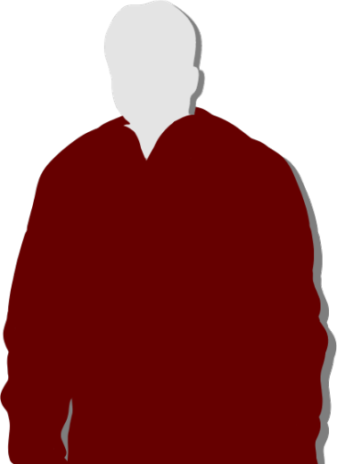
「改めて自己紹介しよう。城崎健吾、ここの住人だ」
「い、いや！ 来ないで！ 人殺し！」
「お、落ち着いて！ 俺は何もしてない！」
私は大声を上げて男を罵る。
こうなった以上、もうここで息を潜めても意味がない。
「い、いや！ 来ないで！ 人殺し！」
「お、落ち着いて！ 俺は何もしてない！」
私は大声を上げて男を罵る。
こうなった以上、もうここで息を潜めても意味がない。
「嘘だ！ さっきの中に混じってた人でしょ！？」
私は立てないままズリズリと隅へ下がる。
「違うんだ！ 僕は最後まで反対して――！」
「同罪だ！ 反対したってあの人たちの仲間なら同罪だ！ 先輩を返して！ 古郡先輩を返しなさいよ！」
私は立てないままズリズリと隅へ下がる。
「違うんだ！ 僕は最後まで反対して――！」
「同罪だ！ 反対したってあの人たちの仲間なら同罪だ！ 先輩を返して！ 古郡先輩を返しなさいよ！」
「ごめん……」
男は私に近づくことなく、その場で詫びる。
私はそれでも城崎への警戒心を解くことができない。
逃げるすべも失った私は、ただ城崎を罵るのみ。
男は私に近づくことなく、その場で詫びる。
私はそれでも城崎への警戒心を解くことができない。
逃げるすべも失った私は、ただ城崎を罵るのみ。
「分かった、じゃあこうしよう」
城崎は懐から、鈍く光るものを取り出した。
ナイフだ。
私がさらに怯えるよりも前に、城崎はナイフを床に置いた。
そしてあぐらをかいて私に背を向ける。
城崎は懐から、鈍く光るものを取り出した。
ナイフだ。
私がさらに怯えるよりも前に、城崎はナイフを床に置いた。
そしてあぐらをかいて私に背を向ける。
「確かに、彼女を助けられなかったのは俺にも責任がある。
でもせめて、1人だけでも助けたい。だから俺は君を追いかけてきた」
と、城崎はあぐらのまま肩を落とし、ため息をつく。
と、城崎はあぐらのまま肩を落とし、ため息をつく。
「もし君が俺を信用できないなら、もう俺は役に立たない。この場で俺の首を刺すといい」
「…………」
「それなら君は俺の手から逃れられる」
「…………」
城崎がナイフを床に置いたとき、そんなことを言うだろうとは思っていた。
しかし私は、それすら罠であると考える。
「…………」
「それなら君は俺の手から逃れられる」
「…………」
城崎がナイフを床に置いたとき、そんなことを言うだろうとは思っていた。
しかし私は、それすら罠であると考える。
正直、それが罠であると考える根拠はない。
ただ、こんなに都合よく住人たちを裏切り、私を助けに来るなんて……。
話が出来過ぎている。
だから私は、今になっても城崎を信用できない。
ただ、こんなに都合よく住人たちを裏切り、私を助けに来るなんて……。
話が出来過ぎている。
だから私は、今になっても城崎を信用できない。
「何が目的なの……？」
ぼそりと、しかし的確に私の意思を伝えたつもりだ。
城崎は、今の一言で私がまだ疑っていることを理解できるはず。
ぼそりと、しかし的確に私の意思を伝えたつもりだ。
城崎は、今の一言で私がまだ疑っていることを理解できるはず。
「目的か……。
罪滅ぼしってのじゃダメか？」
「死人を出しておいて、この程度で罪滅ぼしですか？」
「でもそうしないと、君は生きて帰れない」
「…………」
「死人を出しておいて、この程度で罪滅ぼしですか？」
「でもそうしないと、君は生きて帰れない」
「…………」
城崎の言うことも分かる。
今ここで私を罠にはめたって何の利点もない。
下手すれば私に殺される。
いや……私を陽動して城崎を殺す動きを住人たちに見せる。
そうして私を殺す根拠を探しているのでは？
今ここで私を罠にはめたって何の利点もない。
下手すれば私に殺される。
いや……私を陽動して城崎を殺す動きを住人たちに見せる。
そうして私を殺す根拠を探しているのでは？
そうだ、古郡先輩のことを「魔女」と呼んで殺したのだ。
もし私がここで城崎を襲えば、私もここで呪殺を起こすことになる。
すると住人たちには私を殺す理由が生まれる。
そう、もしかするとこのほら穴はすでに囲まれているかもしれないのだ。
もし私がここで城崎を襲えば、私もここで呪殺を起こすことになる。
すると住人たちには私を殺す理由が生まれる。
そう、もしかするとこのほら穴はすでに囲まれているかもしれないのだ。
だとしてもやり方が回りくどい。
それは十分に理解している。
理解しているが、私の命がかかっている。
だからそう簡単に信用するわけにもいかない。
それは十分に理解している。
理解しているが、私の命がかかっている。
だからそう簡単に信用するわけにもいかない。
「じゃあ、話を聞かせてください。
なぜ古郡先輩は襲われたんですか？」
「彼女が襲われた理由ね……。 そうだね、そこから話した方がいいかな」
と、城崎はあぐらのままぐるりとこちらを向く。
「彼女が襲われた理由ね……。 そうだね、そこから話した方がいいかな」
と、城崎はあぐらのままぐるりとこちらを向く。
――私は城崎から魔女の力、古郡先輩、呪殺事件のことを聞いた。
危険予知能力を持つ古郡先輩を殺した。
サクラさんが危険予知能力を持っていて、その呪いで人が死んでいく。
しかし同時に住人が住人を疑い、疑心暗鬼が募っていった。
だから同じ能力を持つ古郡先輩も殺した。
危険予知能力を持つ古郡先輩を殺した。
サクラさんが危険予知能力を持っていて、その呪いで人が死んでいく。
しかし同時に住人が住人を疑い、疑心暗鬼が募っていった。
だから同じ能力を持つ古郡先輩も殺した。
つまりサクラさんの呪いと思う一方で人間の仕業であるとも考えていた。
ふむ、理論としては破たんしているが、こんな状況に10年も置かれていた人の心理としては理解できる。
となると――。
ふむ、理論としては破たんしているが、こんな状況に10年も置かれていた人の心理としては理解できる。
となると――。
「あなたはどうやって古郡先輩の能力を知ったんですか？」
「知った経緯……。 俺も住人の1人から聞いただけだ」
「じゃあその住人は誰から聞いたんですか？」
「さあ……そこまでは……」
「知った経緯……。 俺も住人の1人から聞いただけだ」
「じゃあその住人は誰から聞いたんですか？」
「さあ……そこまでは……」
「今の話、矛盾してますよね？
古郡先輩の能力を知っているのは新村本家の一部だけ。
しかし住人の1人が知っていた。
危険予知能力が魔女であることの証なら、古郡先輩の能力を住人に知られることはかなり危険である。
つまり――」
「なるほど、つじつまを合わせるなら新村家の誰かが住人の1人、つまり瀬に垂れこんだと」
「もう1つ聞かせてください。 サクラさんが危険を予知するにはどんな条件が必要だったんですか？」
「もう1つ聞かせてください。 サクラさんが危険を予知するにはどんな条件が必要だったんですか？」
「サクラちゃんは桜の時期に暗くて狭い場所にいると予知できてた。
長い時間そこにいると気分を悪くしていたけど」
「暗くて狭い場所……？」
そう言えば、さっき……。
「暗くて狭い場所……？」
そう言えば、さっき……。


「3人は四月病のことをはっきりとは知らないと思う。
なつみちゃんのことは、言伝で聞いただけだからサクラと完全に一致するか分からない。
ただはっきり言えることは……サクラは崖の上で自分が死ぬのを待っていたんだよ……」
「つまり……四月病が発症して、ふらっと倒れてしまうのを待っていたってことか？」
「つまり……四月病が発症して、ふらっと倒れてしまうのを待っていたってことか？」
「俺はそう思ってる。いくら死ぬ気でも、さすがにあそこから飛び込むのは勇気がいる。
もしかしたら踏ん切りがつかず、崖の上で意識がなくなるのを待っていたんじゃないかって……」
そういうことか。
住人に古郡先輩の能力を垂れこんだのは幸太郎さん。
城崎と幸太郎さんの証言が食い違っている―― つまりサクラさんの危険予知の条件がおかしい。
仮に城崎の証言が正しいなら、崖の上では四月病が起きるはずがないのだ。
住人に古郡先輩の能力を垂れこんだのは幸太郎さん。
城崎と幸太郎さんの証言が食い違っている―― つまりサクラさんの危険予知の条件がおかしい。
仮に城崎の証言が正しいなら、崖の上では四月病が起きるはずがないのだ。
なぜ幸太郎さんがこんな矛盾した証言をしたのかと言えば、矛盾した証言をしたとしても問題がない。
間もなく住人たちが襲い掛かってくると分かっていたのだ。
つまり、本当の元凶は幸太郎さんだ。
しかしなぜ幸太郎さんは住人たちをたきつけて、古郡先輩を襲わせたのだろうか。
古郡先輩を殺したいってことだったのだろうか。
間もなく住人たちが襲い掛かってくると分かっていたのだ。
つまり、本当の元凶は幸太郎さんだ。
しかしなぜ幸太郎さんは住人たちをたきつけて、古郡先輩を襲わせたのだろうか。
古郡先輩を殺したいってことだったのだろうか。
私は、少なくともこの城崎という男は信用できると考える。
いや、信用した方が得策と言うべきか。
この男の発言には矛盾がないし、先ほど危惧した私を殺す大義名分も必要ない。
あくまで目的は危険予知能力を持つ古郡先輩であり、私が狙われるとすれば目撃者である、ということくらいか。
いや、信用した方が得策と言うべきか。
この男の発言には矛盾がないし、先ほど危惧した私を殺す大義名分も必要ない。
あくまで目的は危険予知能力を持つ古郡先輩であり、私が狙われるとすれば目撃者である、ということくらいか。
「本当に私を助けてくれるんですか？」
「頼りないかもしれないけど、そのつもりだ」
「それって住人のみんなを裏切るってことですよね？ 大丈夫なんですか？」
「まあ、大丈夫と言われたら大丈夫じゃないさ。 でもこの先、もう今まで通りの荒田ってわけにもいかないだろう。 何しろ住人が直接人を殺しにかかったわけだから」
「頼りないかもしれないけど、そのつもりだ」
「それって住人のみんなを裏切るってことですよね？ 大丈夫なんですか？」
「まあ、大丈夫と言われたら大丈夫じゃないさ。 でもこの先、もう今まで通りの荒田ってわけにもいかないだろう。 何しろ住人が直接人を殺しにかかったわけだから」
「それが嫌で他の住人たちを裏切るってことですか？」
「ざっくりそういうことになるかな」
「城崎さんは憎くないんですか？ 古郡先輩を魔女だと思っているんじゃ……」
「まさか。全員そう思っているわけじゃない。 でも呪いに怯えて殺気立っているやつらも確かにいる。 そんな殺気立ったやつらに逆らえば、自分だってどんな目に遭うか……」
「ざっくりそういうことになるかな」
「城崎さんは憎くないんですか？ 古郡先輩を魔女だと思っているんじゃ……」
「まさか。全員そう思っているわけじゃない。 でも呪いに怯えて殺気立っているやつらも確かにいる。 そんな殺気立ったやつらに逆らえば、自分だってどんな目に遭うか……」
「自己保身のために仕方なく襲撃に加わっている人もいると」
「ああ。実際、さっきの襲撃前に反対してリーダー格のやつに斬られた者もいる。 彼女は一命を取り留めたけど、やっぱり表立って逆らうことは難しい」
「それはつまり、今は城崎さんの立場も危ういってことですね」
「ああ。実際、さっきの襲撃前に反対してリーダー格のやつに斬られた者もいる。 彼女は一命を取り留めたけど、やっぱり表立って逆らうことは難しい」
「それはつまり、今は城崎さんの立場も危ういってことですね」
「俺は加わるふりをしながら、新村本家の外に隠れていた。
そしたら君が逃げ出してきたから……。
あの様子じゃ、元木町の彼女はやられたんだろ？」
「はい……」
「そうか……本当にすまないことをした……」
「はい……」
「そうか……本当にすまないことをした……」
「でもいいんですか？ 私なんかに構っていたら城崎さんが逃げるの遅れますよね？」
「さっきも言っただろ？ 罪滅ぼしだって。 せめて1人でも多く無事に帰ってもらいたい」
「………… 分かりました。今は城崎さんを頼る以外ありません。 もしよければ、助けて下さい」
「さっきも言っただろ？ 罪滅ぼしだって。 せめて1人でも多く無事に帰ってもらいたい」
「………… 分かりました。今は城崎さんを頼る以外ありません。 もしよければ、助けて下さい」
「分かった。もしそうなら早くここを発った方がいい。
身体の調子は？」
「正直、さっき走ってかなり疲れています。あの山道を歩いて下るのはちょっと……」
「よし、ならバギーを使おう。俺の家に1台停めてある」
「あの……他の元木町の人たちは……」
「正直、さっき走ってかなり疲れています。あの山道を歩いて下るのはちょっと……」
「よし、ならバギーを使おう。俺の家に1台停めてある」
「あの……他の元木町の人たちは……」
「春花ちゃんや美冬ちゃんは……
ごめん、どうなったか俺にも分からない。
本当ならみんなの安否も確かめたいけど、君1人を逃がすだけでも手一杯だろうな……」
「そう……ですか……」
「そう……ですか……」
新村先輩たちを見殺しにせざるを得ないのか。
いや、今は私の判断で助けるか否か決めるべきではない。
城崎さんの判断に任せ、方策に従う。
城崎さんに何かあれば、私のサバイバル劇は失敗に終わるのだから。
いや、今は私の判断で助けるか否か決めるべきではない。
城崎さんの判断に任せ、方策に従う。
城崎さんに何かあれば、私のサバイバル劇は失敗に終わるのだから。
「じゃあまずは俺の家まで頑張って欲しい」
「はい。お世話になります」
「それと、この赤装束と能面は君が…… えっと、君の名前は……」
「五島絵梨奈です。五島って呼んでください」
「じゃあ五島ちゃん、君が能面と装束を着けるんだ。もし見つかっても多少はごまかせるだろう」
「はい。お世話になります」
「それと、この赤装束と能面は君が…… えっと、君の名前は……」
「五島絵梨奈です。五島って呼んでください」
「じゃあ五島ちゃん、君が能面と装束を着けるんだ。もし見つかっても多少はごまかせるだろう」
祀耀800年四月八日深夜1時。
南中高度をやや過ぎた月がこの殺風景な森を照らす。
南中高度をやや過ぎた月がこの殺風景な森を照らす。
先導は城崎さんに任せ、私はだぼだぼの赤装束とぶかぶかの能面を着け背中を追う。
城崎さんは幼児と散歩するかのようにゆっくりと歩き、何度も振り返り私の様子を確認する。
しかしただでさえ足腰は疲労し、加えてこの歩きにくい格好。
何度も木の根や石に足を取られる。
城崎さんは幼児と散歩するかのようにゆっくりと歩き、何度も振り返り私の様子を確認する。
しかしただでさえ足腰は疲労し、加えてこの歩きにくい格好。
何度も木の根や石に足を取られる。

「ほら」
城崎さんは私に手を伸ばす。
「すみません……」
私も素直に手を伸ばし、城崎さんの分厚い手を握る。
これでは本当に幼児の散歩と変わらない。
城崎さんは私に手を伸ばす。
「すみません……」
私も素直に手を伸ばし、城崎さんの分厚い手を握る。
これでは本当に幼児の散歩と変わらない。
「他の住人たちはどこへいるんですか？」
「分からない。俺もあの後すぐに君を追ったから」
「じゃあ手分けして生存者を探している可能性もあるわけですよね」
「可能性と言うか、間違いなくそうしているだろうな……」
「分からない。俺もあの後すぐに君を追ったから」
「じゃあ手分けして生存者を探している可能性もあるわけですよね」
「可能性と言うか、間違いなくそうしているだろうな……」
「でもそれにしては、ずいぶんと静かですよね。
そんなにみんな広範囲に広がっているんですかね……」
「いや、そんなに広く散ってはいないだろうな。 美冬ちゃんならともかく、君はここの土地勘もないし、そう遠くへ行くとも思わないだろう。 ふむ……言われてみれば確かに変だな。もう誰かしらの気配があってもいい頃だ」
「…………」
「いや、そんなに広く散ってはいないだろうな。 美冬ちゃんならともかく、君はここの土地勘もないし、そう遠くへ行くとも思わないだろう。 ふむ……言われてみれば確かに変だな。もう誰かしらの気配があってもいい頃だ」
「…………」
「あの……さっきここの住民簿見せてもらいました。
最初に呪殺された『城崎百合子』という名は覚えています。
もしかしてその人って……」
「俺の妻だ」
「じゃあ犯人憎いですよね……」
「俺の妻だ」
「じゃあ犯人憎いですよね……」
「俺は仏でも菩薩でもないし、憎しみがないかと言われたら嘘になる。
だからと言って怒りに任せて動けば、それこそもっと悲惨なことになる。今日みたいに」
「…………」
「それにあの日……。 百合子は死ぬ前の日、警察を呼んで集落を調べてもらおうとしていたんだ」
「警察を……？」
「…………」
「それにあの日……。 百合子は死ぬ前の日、警察を呼んで集落を調べてもらおうとしていたんだ」
「警察を……？」
「ああ、それが悪かったのかどうかは分からない。
ただ言えるのは、百合子は本当にこの集落の平和を望んでいた。
もし俺がめちゃくちゃな行動を取ったら、きっと百合子は悲しむだろう」
「そうだったんですか……」
「結局こんなことになってしまって、俺は百合子にどう顔向けしたらいいのか……。 だからせめて、1人だけでも無事に帰してやりたい。 君のためにも、百合子のためにも」
「そうだったんですか……」
「結局こんなことになってしまって、俺は百合子にどう顔向けしたらいいのか……。 だからせめて、1人だけでも無事に帰してやりたい。 君のためにも、百合子のためにも」
この時には、城崎さんへの疑心はほとんど消えていた。
話に矛盾がないとかそういう理由ではない。
この人はただ純粋にこの集落の平和を望んでいる。
そんな人が殺人なんてするはずがない。
話に矛盾がないとかそういう理由ではない。
この人はただ純粋にこの集落の平和を望んでいる。
そんな人が殺人なんてするはずがない。
そりゃ、自分の立場を考えたら過激派を敵に回すこともできなかっただろう。
それでも城崎さんはできる限りのことをやろうとしていた。
結果は残念であったが、まだ最悪の事態には陥っていない。
私が生還できれば、今でき得る少しでもマシな結末を迎えられる。
それでも城崎さんはできる限りのことをやろうとしていた。
結果は残念であったが、まだ最悪の事態には陥っていない。
私が生還できれば、今でき得る少しでもマシな結末を迎えられる。
私は部外者であり、この集落がどんな状況になろうと直接的な被害はない。
しかし新村先輩ゆかりの地であり、エリカちゃんが長をしているこの集落。
私だってこの惨状を何とかしたいと思っている。
でもやはり、城崎さんのような当事者と比べれば、どうしても切実さでは勝てない。
しかし新村先輩ゆかりの地であり、エリカちゃんが長をしているこの集落。
私だってこの惨状を何とかしたいと思っている。
でもやはり、城崎さんのような当事者と比べれば、どうしても切実さでは勝てない。
今私にできるのは生きて帰ること。
それが城崎さんの願いでもある。
私が下手に首を突っ込めば足を引っ張ってしまうだろう。
でも例え解決はできなくても、新村先輩たちと一緒に帰りたい。
それが城崎さんの願いでもある。
私が下手に首を突っ込めば足を引っ張ってしまうだろう。
でも例え解決はできなくても、新村先輩たちと一緒に帰りたい。
と、城崎さんが足を止める。
「よし、ここから集落に入る。
君はここに隠れてくれ。俺は様子を見てくる」
「はい……」
「もし10分経っても戻らなかったら……。 その時は申し訳ないけど、この道をまっすぐ進んでくれ。 ずっとずっと進んで自動車のわだちをたどれば、荒田駅に着けるはず」
「私1人で……？」
「はい……」
「もし10分経っても戻らなかったら……。 その時は申し訳ないけど、この道をまっすぐ進んでくれ。 ずっとずっと進んで自動車のわだちをたどれば、荒田駅に着けるはず」
「私1人で……？」
「不安だろうけど、このまま調べもせずに一緒に俺の家まで行くのは危険だ」
「はい……」
「大丈夫、ちゃんと無事に帰してあげるから」
そして城崎さんは私の前から姿を消した。
「はい……」
「大丈夫、ちゃんと無事に帰してあげるから」
そして城崎さんは私の前から姿を消した。
私はすぐに、そばの木の下に座り込んだ。
月光に当たらないよう、キュッと身を縮こめる。
10分か……。長いのか短いのか、今の私には分からない。
月光に当たらないよう、キュッと身を縮こめる。
10分か……。長いのか短いのか、今の私には分からない。
新村先輩たちは大丈夫だろうか。
もし狙いが本当に古郡先輩だけなら、無事でいる見込みもある。
古郡先輩が死んだ――。
私にとってこの上ないほど悲惨なことなのに、まだ実感がわかない。
だから不思議と悲しみを感じないのだ。
もし狙いが本当に古郡先輩だけなら、無事でいる見込みもある。
古郡先輩が死んだ――。
私にとってこの上ないほど悲惨なことなのに、まだ実感がわかない。
だから不思議と悲しみを感じないのだ。
きっと生きて帰ることができたなら、次第にその悲しみに押しつぶされるだろう。
私、古郡先輩のいない世界で生きていけるのだろうか。
もし新村先輩まで失ったら……。
もし……今私が新村先輩たちを探しに行けば……。
遅くなるより今すぐ探しに行った方が、生きて会える可能性が上がる。
私だって、いつ襲われるか分からない身なのだから。
私、古郡先輩のいない世界で生きていけるのだろうか。
もし新村先輩まで失ったら……。
もし……今私が新村先輩たちを探しに行けば……。
遅くなるより今すぐ探しに行った方が、生きて会える可能性が上がる。
私だって、いつ襲われるか分からない身なのだから。
しかし、そのように考えるのみで足はキュッと腕に抱えられたまま。
怖くて動けないというのもある。
私が勝手に行動してしまえば、どれほど城崎さんに迷惑をかけることになるか。
城崎さんが私を助けるのだって命がけのはずだ。
その意思を部外者の判断で壊すわけにはいかない。
怖くて動けないというのもある。
私が勝手に行動してしまえば、どれほど城崎さんに迷惑をかけることになるか。
城崎さんが私を助けるのだって命がけのはずだ。
その意思を部外者の判断で壊すわけにはいかない。
と、大きな足音を立ててこちらに走ってくる何者か――。
城崎さんだろうか。
いや、そんなはずはない。
足音を鳴らし走って近づいてくるなんて、他の人たちに私の存在を知らせているようなものだ。
城崎さんだろうか。
いや、そんなはずはない。
足音を鳴らし走って近づいてくるなんて、他の人たちに私の存在を知らせているようなものだ。
敵か味方か――。
私はさらに頭を抱えて小さくなる。
お願い……！ 味方であってほしい……！
私はさらに頭を抱えて小さくなる。
お願い……！ 味方であってほしい……！
「五島ちゃん、すぐ来てくれ！」
遠慮のない声量で私を呼ぶ声。
この声は――。
遠慮のない声量で私を呼ぶ声。
この声は――。
城崎さんだ。
安心すると同時に、また事態が変わったと悟る。
安心すると同時に、また事態が変わったと悟る。
「どうしたんですか？」
「様子が変だ。 みんなが……」
「みんな……？」
「住人たちがみんな…… 殺されてる」
「様子が変だ。 みんなが……」
「みんな……？」
「住人たちがみんな…… 殺されてる」
どういうこと？
住人たち、つまり古郡先輩を襲った集団が殺されている？
しかも殺されたと断言できるなら、目立つ外傷もあるはず。
住人たち、つまり古郡先輩を襲った集団が殺されている？
しかも殺されたと断言できるなら、目立つ外傷もあるはず。
「あちこちでみんなの酷い死体が転がっている。
その分襲われる可能性は低くなったけど、俺の家までそこを通ることになるな……」
「仕方ないです。そこしか道がないなら……」
「俺にも何が起きているのかさっぱりだ。早くここから逃げよう」
「仕方ないです。そこしか道がないなら……」
「俺にも何が起きているのかさっぱりだ。早くここから逃げよう」
城崎さんは再び私の手を取り歩き出した。
先ほどのように足音の立つ走り方はしていないが、森の時よりもやや早歩きになっている。
先ほどのように足音の立つ走り方はしていないが、森の時よりもやや早歩きになっている。

やがて集落の家々が見えてきた。
「うわ……」
月明かりに照らされた地面に、いびつなものが所々転がっている。
それが人であると気づくのに、さほど時間はかからなかった。
月明かりに照らされた地面に、いびつなものが所々転がっている。
それが人であると気づくのに、さほど時間はかからなかった。
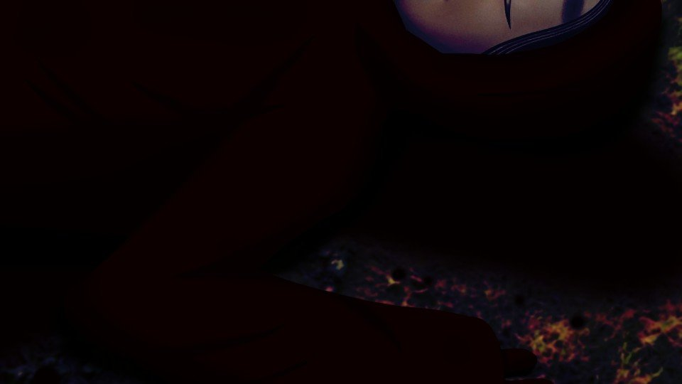
首がいびつな方を向いている者。
胴体部分で大きくねじれた者。
うずくまったまま赤い水たまりに倒れている者。
その者たちは皆、能面や赤装束を着けている、あるいはそれらがやぶれたり外れたりしている。
胴体部分で大きくねじれた者。
うずくまったまま赤い水たまりに倒れている者。
その者たちは皆、能面や赤装束を着けている、あるいはそれらがやぶれたり外れたりしている。
死体の状況を見るに、銃器によるものではなく手に持つ武器で襲われたということになる。
これだけの人が死んだとなると、住人が二派に分かれて争ったと考えられる。
城崎さんが言っていたように、過激な行動を嫌う者もいたはず。
これだけの人が死んだとなると、住人が二派に分かれて争ったと考えられる。
城崎さんが言っていたように、過激な行動を嫌う者もいたはず。
にしては結局やることが過激だ。
過激な行動を嫌うと言うよりは、古郡先輩のような部外者を襲うことに強く反対する勢力、と言うべきか。
どちらにしても憶測の域は出ないが、早くここを去るべきだ。
過激な行動を嫌うと言うよりは、古郡先輩のような部外者を襲うことに強く反対する勢力、と言うべきか。
どちらにしても憶測の域は出ないが、早くここを去るべきだ。

「ここが俺の家だ。ちょっと待っててくれ」
城崎さんはそう言うと家に入り、すぐに長いものを持って戻ってきた。
それは猟銃のようだ。
城崎さんはそう言うと家に入り、すぐに長いものを持って戻ってきた。
それは猟銃のようだ。
「丸腰じゃさすがに心もとないからね。さあ、乗って！」
城崎さんの指示に従い、バギーへ1歩踏み出す。
が、2歩目の足が出ない。
城崎さんの指示に従い、バギーへ1歩踏み出す。
が、2歩目の足が出ない。
「どうしたの？」
「新村先輩たちが……」
「そっか……心配だよね……」
「私、本当に逃げてもいいんでしょうか……」
「気持ちは分かるけど、今は自分の身を考えるべきだよ。今から生存者を探すのは危険だ。 どうもこの集落、変なことが起きているみたいだし」
「…………」
「新村先輩たちが……」
「そっか……心配だよね……」
「私、本当に逃げてもいいんでしょうか……」
「気持ちは分かるけど、今は自分の身を考えるべきだよ。今から生存者を探すのは危険だ。 どうもこの集落、変なことが起きているみたいだし」
「…………」

城崎さんの背中にしがみつき、山道の空気を身体で切る。
この季節の山ではあるが、赤装束のおかげかさほど寒いとも思わない。
この季節の山ではあるが、赤装束のおかげかさほど寒いとも思わない。
結局着の身着のまま出てきたから、私の持ち物はスマホしかない。
着替えも財布も、全て新村本家に置きっぱなし。
荒田駅で一晩過ごしたとしても、無一文で元木町に帰れるのだろうか。
それならすぐに警察を呼んで保護してもらうか……。
家族に連絡を取り、迎えに来てもらうのがいいだろうか。
着替えも財布も、全て新村本家に置きっぱなし。
荒田駅で一晩過ごしたとしても、無一文で元木町に帰れるのだろうか。
それならすぐに警察を呼んで保護してもらうか……。
家族に連絡を取り、迎えに来てもらうのがいいだろうか。
集落のように凄惨な光景はこの山道にはない。
木々は風に身を任せ、月光は相変わらず穏やか。
先ほどの出来事が全て嘘であったかのようだ。
木々は風に身を任せ、月光は相変わらず穏やか。
先ほどの出来事が全て嘘であったかのようだ。
城崎さんは無言でバギーを走らせている。
本当は人の多いところまで送ってもらいたいが、バギーの燃費とタンク容量を考えたら、それも無理だろう。
こんな田舎じゃ夜中にやっているガソリンスタンドもないだろうし。
本当は人の多いところまで送ってもらいたいが、バギーの燃費とタンク容量を考えたら、それも無理だろう。
こんな田舎じゃ夜中にやっているガソリンスタンドもないだろうし。
「うわ！」
突然バギーが急ブレーキで停止する。
停まるとすぐにバギーのエンジンも切れる。
突然バギーが急ブレーキで停止する。
停まるとすぐにバギーのエンジンも切れる。
「早くこっちへ！ 前に人影が見えた！」
人影！？
城崎さんは返事を聞く前に、また私を抱えて木々の中へ駆けていく。
人影！？
城崎さんは返事を聞く前に、また私を抱えて木々の中へ駆けていく。
山道から5メートルほど入ったところで私を降ろし、身を潜める。
私も城崎さんと同じく木の陰に隠れる。
私も城崎さんと同じく木の陰に隠れる。

「城崎さん、こんな暗い場所で見えるんですか？」
「まあ山育ちだし、月もあるから。 前の方に少なくとも2人はいるみたいだ」
「2人……？」
「誰かまでは分からなかったけど……」
「まあ山育ちだし、月もあるから。 前の方に少なくとも2人はいるみたいだ」
「2人……？」
「誰かまでは分からなかったけど……」
こんな山中での人影となると、ほぼ間違いなく住人の誰かだろう。
それが2人……。
と、次第に足音が近づいてくる。
私は身をさらに潜め、城崎さんは猟銃を構える。
足音に混じり、その声も聞こえてくる。
それが2人……。
と、次第に足音が近づいてくる。
私は身をさらに潜め、城崎さんは猟銃を構える。
足音に混じり、その声も聞こえてくる。
「確かにこの辺のはずだ」
「この辺探すの？」
「ああ」
「この辺探すの？」
「ああ」
確かに、相手は2人のようだ。
しかし何だろう。
どこかで聞いたことのあるような声……。
しかし何だろう。
どこかで聞いたことのあるような声……。
「城崎さん、待って下さい」
銃を構える城崎さんに小声で話しかける。
「し！ 静かに！」
「あの人たちを撃たないで下さい！」
「…………？」
すると城崎さんは不思議そうに銃を下ろす。
銃を構える城崎さんに小声で話しかける。
「し！ 静かに！」
「あの人たちを撃たないで下さい！」
「…………？」
すると城崎さんは不思議そうに銃を下ろす。
「五島ちゃんは必ずこの辺りにいる」
「その城崎って人と一緒なのよね？」
やっぱりそうだ！
この2人は！
「その城崎って人と一緒なのよね？」
やっぱりそうだ！
この2人は！
私は山道へ飛び出した。


「おじさん！ おばさん！」
「五島ちゃん！？」
「五島ちゃん！？」
「五島ちゃん！？」
「五島ちゃん！？」
――私にようやく本当の安堵感がやってきた。
城崎さんをまだ疑っていたわけではないが、長い付き合いの人とそうでない人とではその差は大きい。
話によると、私たちのスマホには盗聴アプリが仕込まれており、集落の異変を知った2人は荒田駅横の資材倉庫からやってきたのだ。
城崎さんをまだ疑っていたわけではないが、長い付き合いの人とそうでない人とではその差は大きい。
話によると、私たちのスマホには盗聴アプリが仕込まれており、集落の異変を知った2人は荒田駅横の資材倉庫からやってきたのだ。
2人とも古郡先輩に何があったのかは知っている。
それでもこの長い山道を歩き、私たちを助けに来てくれたのだ。
それでもこの長い山道を歩き、私たちを助けに来てくれたのだ。
「なつみ……」
特におばさんは古郡先輩のことで終始暗い表情だった。
娘の安否が絶望的なのであれば無理もないこと。
にもかかわらずこうして来てくれて、感謝の念以外にない。
特におばさんは古郡先輩のことで終始暗い表情だった。
娘の安否が絶望的なのであれば無理もないこと。
にもかかわらずこうして来てくれて、感謝の念以外にない。
「茜は五島ちゃんと一緒に駅へ戻ってくれ。集落へは俺1人で行く」
「良治君！？ 1人でだなんて……！」
と、おじさんは城崎さんの方に目をやる。
「良治君！？ 1人でだなんて……！」
と、おじさんは城崎さんの方に目をやる。
「まあ、俺のことを信用できないのは仕方ないです。
五島ちゃんだって俺よりもこの2人の方が安心だろ？」
「それは……」
経緯はどうあれ、城崎さんはこうして2人に引きあわせてくれた。
今さら疑おうという気にはなれない。
「それは……」
経緯はどうあれ、城崎さんはこうして2人に引きあわせてくれた。
今さら疑おうという気にはなれない。

「じゃあこうしましょう。
バギーは奥さんに貸しますので、できるだけ安全なところへ避難して下さい。
俺と旦那さんとで集落へ行きます」
「おい、あんたは本当に信用できるのか……？」
おじさんはまだ城崎さんに疑念の視線を送るが――。
「おい、あんたは本当に信用できるのか……？」
おじさんはまだ城崎さんに疑念の視線を送るが――。
「おじさん、城崎さんは味方です。私が保証しますから」
「…………」
するとおじさんは大きなため息を鼻から吐く。
「…………」
するとおじさんは大きなため息を鼻から吐く。
「分かった。じゃあ城崎さん、案内を頼みたい」
「分かりました」
「良治君……」
「茜、こうして味方が増えたんだ。役割分担をした方がいい」
「分かったわ……。春花ちゃんのこと、お願いね？」
「分かりました」
「良治君……」
「茜、こうして味方が増えたんだ。役割分担をした方がいい」
「分かったわ……。春花ちゃんのこと、お願いね？」
…………？
春花ちゃんって……。
そうか、盗聴アプリで新村先輩の状況も分かっている。
と言うことは……！
春花ちゃんって……。
そうか、盗聴アプリで新村先輩の状況も分かっている。
と言うことは……！
「もしかして新村先輩は無事なんですか！？」
「ああ、今もどこかに身を潜めているみたいだ」
「ああ、今もどこかに身を潜めているみたいだ」
地面に這いつくばる感覚。
冷える手足。
口からだらりとよだれが垂れているのが分かる。
目を開けると……。
冷える手足。
口からだらりとよだれが垂れているのが分かる。
目を開けると……。
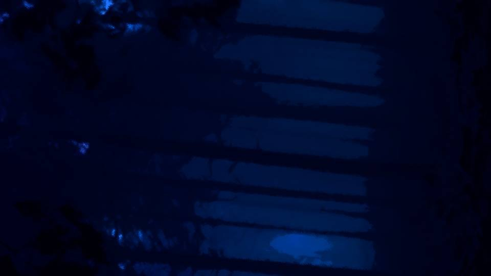
ちょうど90度回転した景色。
私はうつぶせで倒れているのか？
何だ、今どうなっているんだ……？
目に映る景色を認識すると、次に認識したのは全身の痛み。
私はうつぶせで倒れているのか？
何だ、今どうなっているんだ……？
目に映る景色を認識すると、次に認識したのは全身の痛み。
「いててて……」
全身の痛みをこらえて起き上がる。
全身の痛みをこらえて起き上がる。
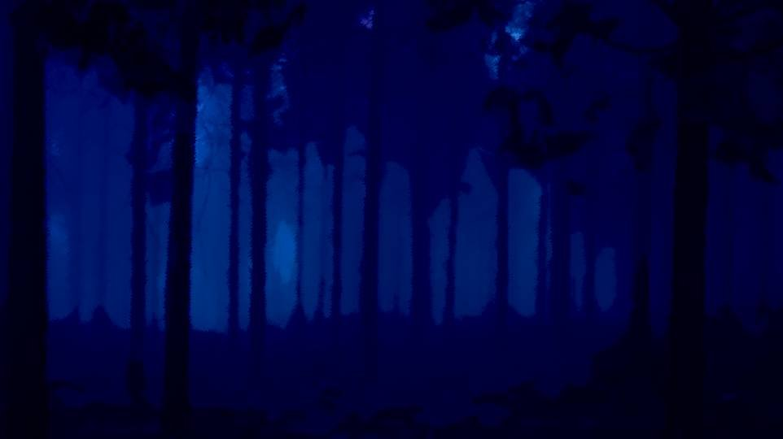
痛みがあると言っても、骨折やねんざをしているわけではないようだ。
ここはどこだ……？
山の中……？
今は何時何分だ……？
山の中……？
今は何時何分だ……？
「うぐ……！」
頭を殴られたような痛み。
何だこの痛みは。
これは頭を打ったというより、頭の中から痛むような感覚。
さっきまで何があったんだっけ……。
頭を殴られたような痛み。
何だこの痛みは。
これは頭を打ったというより、頭の中から痛むような感覚。
さっきまで何があったんだっけ……。


「春花、ちょっといい？」
「ん？」
「十三回忌なんだけど、茜たちは欠席するんだって」
「え？ どうしたんだ？」
「ん？」
「十三回忌なんだけど、茜たちは欠席するんだって」
「え？ どうしたんだ？」
「えっと……ちょっとね。
でも代わりになつみちゃんと五島ちゃんが参列してくれるらしいわ」
「なつみと五島……？ いや、なつみが参加するのは分かるけど、なんで五島まで？ あいつは十三回忌には関係ないだろ？」
「なつみと五島……？ いや、なつみが参加するのは分かるけど、なんで五島まで？ あいつは十三回忌には関係ないだろ？」
「これは言ってもいいと思うんだけど、今日茜たちと十三回忌の打ち合わせをしている時に、なつみちゃんに会ったの。
そしたら……」
「もしかして……危険予知……？」
「そういうこと。だから茜たちは参加させられないの」
「ふーん。まあなつみの言う通りにすれば心配ないだろうけどさ」
「もしかして……危険予知……？」
「そういうこと。だから茜たちは参加させられないの」
「ふーん。まあなつみの言う通りにすれば心配ないだろうけどさ」
最後に覚えているのはそんなことだ。
ということは、今は三月の下旬ってことか？
スマホを取り出し、時刻を確認する。
ということは、今は三月の下旬ってことか？
スマホを取り出し、時刻を確認する。

「え？
祀耀800年四月八日……0:30って……」
おかしい。さっきのお母さんとのやり取りが私の最後の記憶だ。
何でいきなり四月八日になっているんだ？
スマホが壊れた……？
おかしい。さっきのお母さんとのやり取りが私の最後の記憶だ。
何でいきなり四月八日になっているんだ？
スマホが壊れた……？
いや、ここの感じには覚えがある。
ここは荒田の山だ。
空気感とか雰囲気とかでここが元木町ではないことは明らか。
ってことは――。
ここは荒田の山だ。
空気感とか雰囲気とかでここが元木町ではないことは明らか。
ってことは――。
もしかして私……
記憶喪失……？
嘘だろ！？ 私、この半月くらいの記憶を失くしているのか！？
急いでスマホのメッセージや写真を確認する。
急いでスマホのメッセージや写真を確認する。
――1番新しいメッセージは、なつみからの『荒田に行く前に昼食を取るな』という連絡。
ばあちゃんに送ったと思われる五島のツインテールの動画もある。
私の記憶にない情報が詰まっている。
ばあちゃんに送ったと思われる五島のツインテールの動画もある。
私の記憶にない情報が詰まっている。
いやそもそもこのスマホは何だ？
私はこんなもの知らない。
知らないはずなのに、指先が操作方法を知っていて見たい情報をすぐに探せる。
だからこのスマホは今まで何度も触ったことがあるのだ。
純粋に私が忘れてしまっていることになる。
私はこんなもの知らない。
知らないはずなのに、指先が操作方法を知っていて見たい情報をすぐに探せる。
だからこのスマホは今まで何度も触ったことがあるのだ。
純粋に私が忘れてしまっていることになる。
色々とスマホを見返してみるが……。
今荒田の山にいると言う以外、特別今の状況が分かる情報はない。
誰かに電話をかけてみようか。
圏外か……。仕方ない、電波の通じるところまで移動しよう。
今荒田の山にいると言う以外、特別今の状況が分かる情報はない。
誰かに電話をかけてみようか。
圏外か……。仕方ない、電波の通じるところまで移動しよう。
相変わらず全身が痛いが、我慢できないほどじゃない。
ゆっくりと立ち上がり身体を伸ばす。
ゆっくりと立ち上がり身体を伸ばす。
どうやら私は、目の前にある急な斜面を転げ落ちて、気を失っていたようだ。
とりあえずこの斜面を登ってみるか。
とりあえずこの斜面を登ってみるか。
しかしいざ登ってみると月明かり程度の光しかなく、木の根や背の高い草が張り出している。
登りにくいったらありゃしない。
登りにくいったらありゃしない。
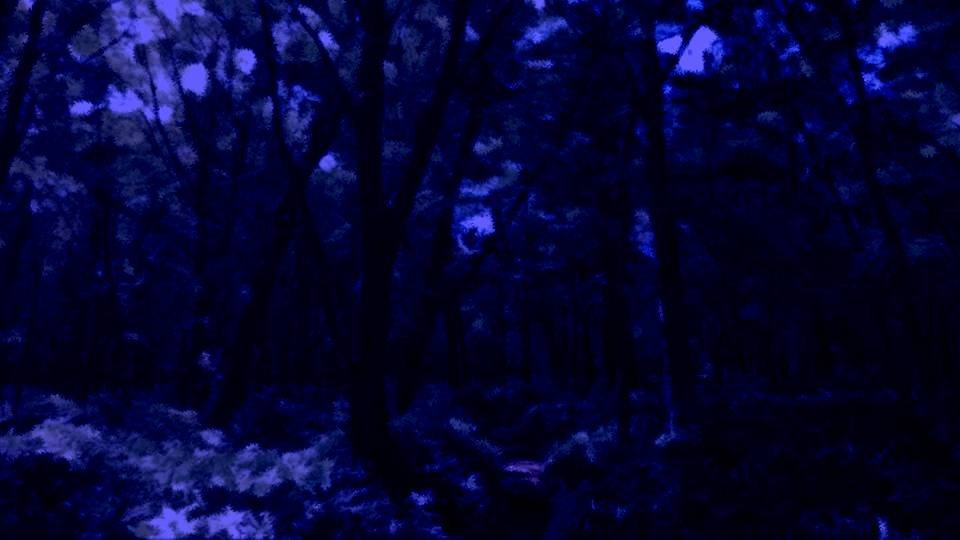
それでも何とか10メートルほどの斜面を登り切り、平坦な場所にたどり着く。
これは山道と言うよりも獣道だな。
私はここから転げ落ちてしまったのか。
しかしどうして私はこんなところを歩いていたのか。
状況から考えるに、私1人で歩いていたのだろう。
もし誰かと一緒なら、助け出してくれるはず。
私はここから転げ落ちてしまったのか。
しかしどうして私はこんなところを歩いていたのか。
状況から考えるに、私1人で歩いていたのだろう。
もし誰かと一緒なら、助け出してくれるはず。
それとも私を助け出すために、誰かが人を呼びに行っているとか？
もしそうなら、うかつにここから動くわけにはいかないな。
ここが荒田なのは間違いないだろうけど、荒田のどこなのかまでは分からないし……。
もしそうなら、うかつにここから動くわけにはいかないな。
ここが荒田なのは間違いないだろうけど、荒田のどこなのかまでは分からないし……。
私は近くの木の根に腰を下ろし、もう一度何があったのかを思い返してみる。
こんなところを歩いていたなんて、もしかしてばあちゃん企画の肝試しでもしていたのかな。
ばあちゃんならそんなこと考えそうだし……。
肝試し……？
こんなところを歩いていたなんて、もしかしてばあちゃん企画の肝試しでもしていたのかな。
ばあちゃんならそんなこと考えそうだし……。
肝試し……？
うっすら思い出した。
新村本家で互いに怪談トークを披露していたな。
怪談トークしてからの肝試しは定石ではあるが……。
新村本家で互いに怪談トークを披露していたな。
怪談トークしてからの肝試しは定石ではあるが……。
こんな夜中じゃ、私はともかくなつみや五島を歩かせないだろうな。
いや、チガ姉や夏菜がついていれば何とかなるか……？
いや、チガ姉や夏菜がついていれば何とかなるか……？
怪談トーク以外は思い出せないし……
仕方ないな、最悪、ここで夜が明けるのを待つべきだろう。
1人で歩いたら余計に遭難してしまう。
1人で歩いたら余計に遭難してしまう。
足音……？
助けが来たのか！？
助けが来たのか！？
「誰かいるのか！？ おい！」
足音の方へ向かって叫ぶ。
足音の方へ向かって叫ぶ。
…………？
誰だ？ こいつ。
赤い着物を着て、長い髪の女。
私よりも少し年下くらいか？
それにこいつ、片目だけ緑だ。
ってことは、やっぱり荒田の住人か？
誰だ？ こいつ。
赤い着物を着て、長い髪の女。
私よりも少し年下くらいか？
それにこいつ、片目だけ緑だ。
ってことは、やっぱり荒田の住人か？

「大丈夫ですか？」
「…………」
この緊急時とは言え、知らないやつに話しかけられるとどう返答したらいいか分からない。
「…………」
この緊急時とは言え、知らないやつに話しかけられるとどう返答したらいいか分からない。
「新村春花さんですよね？」
「え？」
「大した怪我もなさそうでよかったです」
「あ、ああ…… そりゃ、どうも……。 えっとあなたは……」
「え？」
「大した怪我もなさそうでよかったです」
「あ、ああ…… そりゃ、どうも……。 えっとあなたは……」
「私は……
糸と言います」
「糸？ やっぱり荒田の人ですか？」
「まあ……そうですね、荒田の人間と言うことにはなります」
妙に引っかかる言い方だ。
「糸？ やっぱり荒田の人ですか？」
「まあ……そうですね、荒田の人間と言うことにはなります」
妙に引っかかる言い方だ。
もしかして、どこかの家の隠し子とかか？
今まで表に出ることは許されず、ずっとどこかで監禁されていたとか。
でも、それにしては服装もきれいだし、虐待されていたような感じでもない。
今まで表に出ることは許されず、ずっとどこかで監禁されていたとか。
でも、それにしては服装もきれいだし、虐待されていたような感じでもない。
「へ……
へ……
へっきゅちん」
「あら、その格好じゃちょっと寒いですよね。火を起こしましょうか」
「火？」
「焚き木を集めてきますね。ここで待っていてください」
なんだかよく分からないやつだが、私を助けようとしてくれているらしい。
「あら、その格好じゃちょっと寒いですよね。火を起こしましょうか」
「火？」
「焚き木を集めてきますね。ここで待っていてください」
なんだかよく分からないやつだが、私を助けようとしてくれているらしい。

糸は焚き木を集め終わると、木と木をこすりあわせてあっという間に火を起こしてしまった。
まるで手品を見ているかのようだった。
マッチもライターもなく火を起こすなんて、ますます正体が分からない。
まるで手品を見ているかのようだった。
マッチもライターもなく火を起こすなんて、ますます正体が分からない。
「すごいですね、火を起こせるなんて」
「私、一時期こういう生活をしていましたから。 何か月も山の中を歩いて、自分で火を起こして食べ物も自分で探す。 私にとっては当たり前のことでした」
「私、一時期こういう生活をしていましたから。 何か月も山の中を歩いて、自分で火を起こして食べ物も自分で探す。 私にとっては当たり前のことでした」
「もしかして、山籠していたことが……？」
「いえ、そう言うわけではないんです。 そういう生活をしないと生きていけなかったので……」
「…………」
「いえ、そう言うわけではないんです。 そういう生活をしないと生きていけなかったので……」
「…………」
「それと春花さん、普段はそういう話し方じゃないですよね？」
「え？」
「普段はもっと、くだけた話し方をしていますよね？ 楽に話してもらって構いませんよ？」
「いやそれならあなたこそ……」
「私は普段からこういう話し方ですから、お気になさらないで下さい」
「え？」
「普段はもっと、くだけた話し方をしていますよね？ 楽に話してもらって構いませんよ？」
「いやそれならあなたこそ……」
「私は普段からこういう話し方ですから、お気になさらないで下さい」
「うーん……
じゃあ、糸って呼ばせてもらうよ」
「はい、春花さん」
糸はにこりと微笑む。
色々と気を遣ってくれているのは分かるが、何で普段の話し方まで知っているんだ？
こいつ、荒田のことをずっと見ていられるような場所にいたってことだよな？
「はい、春花さん」
糸はにこりと微笑む。
色々と気を遣ってくれているのは分かるが、何で普段の話し方まで知っているんだ？
こいつ、荒田のことをずっと見ていられるような場所にいたってことだよな？
「なあ、糸って何者なんだ？」
「何者……？」
「だって今まで会ったこともないし、糸なんて住人がいたことも知らない。 でも、私のことよく知っているみたいだし……」
「私が春花さんと会えるのは今だけです。 もう少ししたら、二度と会うこともないと思います」
「…………？」
「何者……？」
「だって今まで会ったこともないし、糸なんて住人がいたことも知らない。 でも、私のことよく知っているみたいだし……」
「私が春花さんと会えるのは今だけです。 もう少ししたら、二度と会うこともないと思います」
「…………？」
「私……普段は自由に動けない身なので……」
「そうなのか……」
やっぱりどこかの家で監禁生活を送っているのか。
ばあちゃんはそんなこと許すはずないだろうし、どこかの家でひっそりと生きていたってことだよな。
「そうなのか……」
やっぱりどこかの家で監禁生活を送っているのか。
ばあちゃんはそんなこと許すはずないだろうし、どこかの家でひっそりと生きていたってことだよな。
「だったら、集落にはどうやって行ったらいいか分かるか？」
「…………」
「私、半月くらいの記憶がなくてさ……」
「記憶がない？」
「うん、多分そこから落ちた時に頭でも打ったんだと思う」
「…………」
「私、半月くらいの記憶がなくてさ……」
「記憶がない？」
「うん、多分そこから落ちた時に頭でも打ったんだと思う」
「そうなんですか……。
だったら、そのままの方がいいかも知れません。
春花さんにとって、思い出さない方がいいこともあると思います」
「何だよ、そんなにやばいことが集落で起きたのか？」
「…………」
糸はそれ以上話そうとしない。
しかし今がどういう状況で何が起きたのか、それは知っておきたい。
「何だよ、そんなにやばいことが集落で起きたのか？」
「…………」
糸はそれ以上話そうとしない。
しかし今がどういう状況で何が起きたのか、それは知っておきたい。
「だったら言える範囲でいいから、集落がどうなっているのか教えてくれよ」
「…………」
「なあ……」
「それはそのうち分かることです」
「何だよそれ……」
「…………」
「なあ……」
「それはそのうち分かることです」
「何だよそれ……」
「知らない方がいいと言いましたが、私から話しにくいこともあります。
すみません……」
「お前……。 ったく、分かったよ。面倒見てもらってるのに、詰め寄るのも失礼だよな……」
「お心遣い、感謝します」
「じゃあお前自身のことも言えないのか？」
「そう……ですね……」
「お前……。 ったく、分かったよ。面倒見てもらってるのに、詰め寄るのも失礼だよな……」
「お心遣い、感謝します」
「じゃあお前自身のことも言えないのか？」
「そう……ですね……」
「だけど荒田のどこかに住んでいるのは確かなんだろ？
誰にも言わないから聞かせてほしいってのはダメか？」
「私…… もう……嫌なんです……」
「はあ？ 監禁生活がか？」
「監禁…… まあ、そうとも言えますね。それもありますけど……。 これ以上、人が死んでいくのが……」
「人が死ぬ……？」
「私…… もう……嫌なんです……」
「はあ？ 監禁生活がか？」
「監禁…… まあ、そうとも言えますね。それもありますけど……。 これ以上、人が死んでいくのが……」
「人が死ぬ……？」

そうだ、ばあちゃんからこの集落で起こる自殺と、ここ10年間起きている殺人について聞かされた。
なるほど、糸はそれが嫌だってことか。
でもばあちゃんから話を聞いた後…… 何があったっけ……。
なるほど、糸はそれが嫌だってことか。
でもばあちゃんから話を聞いた後…… 何があったっけ……。
「もう誰にも死んでほしくない。
だから私1人では非力ではありますが、春花さんに無事に帰ってもらいたくて……」
「そうか……。 そうだよな、こんな状況だと私も呪殺される可能性もあるもんな……」
「そうか……。 そうだよな、こんな状況だと私も呪殺される可能性もあるもんな……」
「今私が見つけられたのは春花さんだけです。
私にはもう時間がないので、私ができるのは春花さんを助けることだけ……」
「私、自殺が続いていることも10年間殺人が起きていることも思い出したよ。 もしかして私がここにいるのって、それに関係があるのか？」
「私、自殺が続いていることも10年間殺人が起きていることも思い出したよ。 もしかして私がここにいるのって、それに関係があるのか？」
「春花さんにとってとてもつらいことだと思います」
「もしかして、なつみたちは……」
「美冬さんと五島さんは無事です。 でも……」
「もしかして、なつみたちは……」
「美冬さんと五島さんは無事です。 でも……」
「まさか、なつみは……」
「…………」
「死んだのか……？」
「ただ死んだだけなら、まだよかったかもしれません」
そこまで聞いた私は立ち上がり、糸に向けて1歩踏み出る。
「…………」
「死んだのか……？」
「ただ死んだだけなら、まだよかったかもしれません」
そこまで聞いた私は立ち上がり、糸に向けて1歩踏み出る。


「もういい加減にしてくれよ！ 一体何が起きたんだよ！」
「ごめんなさい春花さん……！ 全部…… 全部私が悪いんです！」
「お前が悪い！？ どういう意味…… って……もしかして、呪殺の犯人って……」
「私です……」
「ごめんなさい春花さん……！ 全部…… 全部私が悪いんです！」
「お前が悪い！？ どういう意味…… って……もしかして、呪殺の犯人って……」
「私です……」
「は……
はは……
ははは……！
何だよ……
ははは……何か変だと思ったよ……」
「…………」
「何だよ……今度は私も殺す気かよ……」
「違います！ 私はもう、こんなこと嫌なんです！」
「…………」
「何だよ……今度は私も殺す気かよ……」
「違います！ 私はもう、こんなこと嫌なんです！」
正直、糸に対して罵りの言葉や怒りの感情が出て来ない。
こいつが呪殺の犯人？
どうみてもこいつは私より年下だし、10年前って言えば幼稚園児くらいだろ？
こいつが呪殺の犯人？
どうみてもこいつは私より年下だし、10年前って言えば幼稚園児くらいだろ？
ふと女ケ沢市でのことを思い出す。
私は子供の頃に紙人形を作り、クラスメイトを殺そうとした。
裏でお母さんがなつみの両親に殺人依頼をしていたとか。
実際には未遂に終わったが、もし本当に殺人が起きていたらどうなるだろうか。
裏でお母さんがなつみの両親に殺人依頼をしていたとか。
実際には未遂に終わったが、もし本当に殺人が起きていたらどうなるだろうか。
きっと私もこいつと同じように自分が犯人だと思い込むだろう。
例え今の年齢になったとしてもだ。
例え今の年齢になったとしてもだ。
「そっか……。それはつらいよな……」
「春花さん、怒らないんですか？」
こいつも自分が犯人だと思い込んでいるだけだ。
監禁されていた身なら、世間を知らずに余計にそうなってしまうだろう。
「春花さん、怒らないんですか？」
こいつも自分が犯人だと思い込んでいるだけだ。
監禁されていた身なら、世間を知らずに余計にそうなってしまうだろう。
「まあ、人生には色々あるからな。人を殺したくなることだってあるだろうよ」
「でも私、なつみさんを……！」
「じゃあそこだけ教えてくれ。 何でお前はなつみが死んだって知っているんだ？」
そう、なつみが死んだのだってこいつの思い込みである可能性がある。
いや、思い込みに違いない。
「でも私、なつみさんを……！」
「じゃあそこだけ教えてくれ。 何でお前はなつみが死んだって知っているんだ？」
そう、なつみが死んだのだってこいつの思い込みである可能性がある。
いや、思い込みに違いない。
もしそれが思い込みでないなら、こいつは10年間の殺人どころか、何十年も起きていた老人の自殺にまで関与していたってことだ。
さすがにそれはないだろう。
さすがにそれはないだろう。
「すみません、話が長くなるので大事な事だけ言います」
「大事なこと？」
「もし古郡なつみさんに出会っても、絶対に信用しないで下さい。 すぐに逃げてください」
「はあ？」
「大事なこと？」
「もし古郡なつみさんに出会っても、絶対に信用しないで下さい。 すぐに逃げてください」
「はあ？」
言っていることがめちゃくちゃだ。
死んだと言っておきながら今度は出会っても信用するな？
どうやって死人に会うんだよ……。
こいつの頭も来るところまで来てしまったんだな。
死んだと言っておきながら今度は出会っても信用するな？
どうやって死人に会うんだよ……。
こいつの頭も来るところまで来てしまったんだな。
「分かった、そうする。
んで、私を助けてくれるってのは、朝までここで話し相手してくれるってことか？」
「春花さんが充分に休んで歩けるようになったら、ふもとまでお送ります」
「ふもと？ 集落じゃなくてか？」
「もう集落は危険です」
「春花さんが充分に休んで歩けるようになったら、ふもとまでお送ります」
「ふもと？ 集落じゃなくてか？」
「もう集落は危険です」
「あのさ、お母さんや五島は無事なんだろ？
2人を放って私だけ――」
「きっとお2人も脱出するはずです。 お願いです！ 逃げてください！」
………… まあ、それでもいいか。
「きっとお2人も脱出するはずです。 お願いです！ 逃げてください！」
………… まあ、それでもいいか。
私がそう思った理由は、こいつを保護してもらうためだ。
こいつはどこかで監禁されているらしいし、それなら警察に引き渡した方がいいだろう。
一応は私もこいつに助けてもらった身だからな、それくらいやってもお母さんは怒らないだろう。
こいつはどこかで監禁されているらしいし、それなら警察に引き渡した方がいいだろう。
一応は私もこいつに助けてもらった身だからな、それくらいやってもお母さんは怒らないだろう。
「もう充分休んだよ。なら、行こうか」
「はい」
私は糸の手を引いて立たせた。
糸の温かく薄い手のひら。
こいつは木だけで火を起こしていたけど、その割にはきれいすぎる手だ。
「はい」
私は糸の手を引いて立たせた。
糸の温かく薄い手のひら。
こいつは木だけで火を起こしていたけど、その割にはきれいすぎる手だ。
「どこ行くの？」
不意に聞き覚えのある声がたき火に混じる。
「なつみ！」
「春花、こんなところにいたんだ」
「はは、ほんとだぜ……。何でこんなところにいるんだか……。 なあ、やっぱりなつみ生きてるじゃないか」
「は…… 春花さん……」
糸は声を震わせ、握っていた私の手をぎゅっと締め付ける。
「春花、こんなところにいたんだ」
「はは、ほんとだぜ……。何でこんなところにいるんだか……。 なあ、やっぱりなつみ生きてるじゃないか」
「は…… 春花さん……」
糸は声を震わせ、握っていた私の手をぎゅっと締め付ける。
「糸……」
「早く、逃げましょう……！」
「でも……」
「早く、逃げましょう……！」
「でも……」
「急いで！」
と、糸は私の手を引き走り出した。
と、糸は私の手を引き走り出した。
「お、おい！ 何なんだよ！」
「言ったじゃないですか！ 信用しないで、逃げてって！」
糸は強い力で私の手を握り、ひたすらに獣道を駆ける。
しかしこれくらいの糸の力なら、手を振りほどいてなつみのところへ戻るなど簡単だろう。
それなのに、なぜか私は抵抗せず糸に手を引かれたままだ。
「言ったじゃないですか！ 信用しないで、逃げてって！」
糸は強い力で私の手を握り、ひたすらに獣道を駆ける。
しかしこれくらいの糸の力なら、手を振りほどいてなつみのところへ戻るなど簡単だろう。
それなのに、なぜか私は抵抗せず糸に手を引かれたままだ。
私は漠然と思ったのだ。
糸は何一つ嘘を言っていない。
なつみを信用するな、なつみから逃げろ――。
糸の警告は、まるでなつみが現れるのを予期しているようだった。
なつみって確か……。
糸は何一つ嘘を言っていない。
なつみを信用するな、なつみから逃げろ――。
糸の警告は、まるでなつみが現れるのを予期しているようだった。
なつみって確か……。
なつみの顔を見てようやく全てを思い出した。
なつみはあの時、あいつらに襲われたんだ。
「五島何やってんだ！ 早く逃げろ！」
私は五島を部屋から押し出し逃がすと、今度はお母さんが私に逃げるよう促した。
私は五島を部屋から押し出し逃がすと、今度はお母さんが私に逃げるよう促した。

「1人逃したか」
「外に城崎がいるはず」
「よし、逃げた者は城崎に任せよう」
「見た者を逃がすわけにはいかない」
「外に城崎がいるはず」
「よし、逃げた者は城崎に任せよう」
「見た者を逃がすわけにはいかない」
「春花！ 早く逃げなさい！」
「わ、分かってる……！」
しかし、私の足は震えたまま。
五島を部屋から押し出すことはできたのに、足が動かない。
「わ、分かってる……！」
しかし、私の足は震えたまま。
五島を部屋から押し出すことはできたのに、足が動かない。
「ほら！ 私はこっちよ！ 窓から飛び降りて逃げられるわ！」
お母さんがやつらに向かって叫ぶ。
やつらはお母さんの方を一斉に向く。
お母さんがやつらに向かって叫ぶ。
やつらはお母さんの方を一斉に向く。
逃げるなら今しかない……！
そう思った瞬間、鉛のように重かった足が急に動き出し、意図せず部屋から出ていく。
そう思った瞬間、鉛のように重かった足が急に動き出し、意図せず部屋から出ていく。


「春花、こっちよ！」
お母さんは本当に窓から飛び降りたらしく、既に私の先回りをしていた。
これは荒田の女だからこそできる業だ。
お母さんは本当に窓から飛び降りたらしく、既に私の先回りをしていた。
これは荒田の女だからこそできる業だ。

お母さんとともに荒田駅の方へ走っていく。
「お母さん！ 裸足で大丈夫なのかよ！」
「そんなこと気にしてられないでしょ！」
「車は使わないのか！？」
「あんな風に襲い掛かってきたんだから、車は壊されていると思った方がいいわ！」
「ちくしょう……！」
「そんなこと気にしてられないでしょ！」
「車は使わないのか！？」
「あんな風に襲い掛かってきたんだから、車は壊されていると思った方がいいわ！」
「ちくしょう……！」
このまま駅までノンストップで走るなんてのは無謀だ。
それに私よりもあいつらの方がこういう道にはるかに慣れている。
それに私よりもあいつらの方がこういう道にはるかに慣れている。
「春花、こっち！」
不意にお母さんが脇道に逸れる。
不意にお母さんが脇道に逸れる。
道と言っても、これは明らかに獣道だ。
がさがさと背の高い草をかき分けて進む。
がさがさと背の高い草をかき分けて進む。
「お母さん！ これはどこへ向かってるんだ！？」
「ふもとの駅の方よ！ 茅萱ちゃんたちはいつもこのルートを通ってるの！」
あんな 猿 の真似してここを通るなんて無謀もいいところだ。
それにどうして駅の方なんかに……。
「ふもとの駅の方よ！ 茅萱ちゃんたちはいつもこのルートを通ってるの！」
あんな 猿 の真似してここを通るなんて無謀もいいところだ。
それにどうして駅の方なんかに……。
「茜たちが駅の資材倉庫に待機しているわ！ 途中で落ち合えるはず！」
「落ち合うったって、こんな獣道じゃ……！」
「大丈夫！ 春花のスマホの位置が分かるようになってるから！」
「落ち合うったって、こんな獣道じゃ……！」
「大丈夫！ 春花のスマホの位置が分かるようになってるから！」
「待て！」
すぐ後ろからあいつらの声。
このままじゃ逃げ切れるかどうかも怪しい。
すぐ後ろからあいつらの声。
このままじゃ逃げ切れるかどうかも怪しい。
と、急に草が低くなり、見通しが良くなる。
しかし――。
しかし――。
見通しが良くなったのは目の前だけでなく、足元もだった。
走っていたはずなのに、足元の地面が消え、下肢が空回る。
走っていたはずなのに、足元の地面が消え、下肢が空回る。
何が起きたのかを認知する余裕すらなく、私はずるずると崖を滑落していく。
「う……ぐぐ……」
打ち所が悪かったのか、意識が朦朧として身体が動かない。
打ち所が悪かったのか、意識が朦朧として身体が動かない。
「春花ー！」
「いたぞ！」
「く…… さあ私たちはこっちよ！ 来なさい！ 追いつけるもんならね！」
薄れゆく意識の中、お母さんとあいつらの声が聞こえ、やがて気配が遠ざかっていく。
「いたぞ！」
「く…… さあ私たちはこっちよ！ 来なさい！ 追いつけるもんならね！」
薄れゆく意識の中、お母さんとあいつらの声が聞こえ、やがて気配が遠ざかっていく。
お母さん……頼む……無事で……いてくれ……。
「春花さん！ はやく走って！」
不意に糸の声で我に返る。
「わ、分かってるって……！」
なつみはあの時確かに死んだはず。
そのことも思い出した。
だから今何者から逃げているのかすら、うまく理解できない。
不意に糸の声で我に返る。
「わ、分かってるって……！」
なつみはあの時確かに死んだはず。
そのことも思い出した。
だから今何者から逃げているのかすら、うまく理解できない。
今まで誰にも見つからなかった糸。
死んだはずなのに生きているなつみ。
そしてそのなつみを殺したのは、この集落のやつら。
とうに私の理解を超えることがここで起きているのだ。
死んだはずなのに生きているなつみ。
そしてそのなつみを殺したのは、この集落のやつら。
とうに私の理解を超えることがここで起きているのだ。
次第に私の足も、糸の足もその動きを鈍らせる。
こんな獣道を数百メートルもダッシュしたら、たいていのやつは音を上げる。
気合いで走り抜けたいが、こんな足場じゃそれも叶わない。
こんな獣道を数百メートルもダッシュしたら、たいていのやつは音を上げる。
気合いで走り抜けたいが、こんな足場じゃそれも叶わない。
「ああ！」
糸が何かに足を取られ、手をつないでいた私も一緒に転倒した。
すぐに立たなくてはならないのに…… 私も糸も、大きく呼吸するばかりで、立とうというそぶりすら見せることができない。
糸が何かに足を取られ、手をつないでいた私も一緒に転倒した。
すぐに立たなくてはならないのに…… 私も糸も、大きく呼吸するばかりで、立とうというそぶりすら見せることができない。
「な……何で……
何で……なつみが生きてるんだよ……」
「はあ……はあ…… ここは……そういう場所なんです……」
「はあ……はあ…… ああ、そうかよ、きっとそうなんだろうな……」
倒れたまま、もと来た道に目をやるが、誰かが追ってくる気配はない。
「はあ……はあ…… ここは……そういう場所なんです……」
「はあ……はあ…… ああ、そうかよ、きっとそうなんだろうな……」
倒れたまま、もと来た道に目をやるが、誰かが追ってくる気配はない。
「はあ……なあ、あいつ追ってこないぞ……」
「はあ……はあ……歩いても追いつけるって確信しているのだと思います。 今の彼女は通常の身体能力ではありませんし」
「なんだよそれ……つかまったらどうなるんだ？」
「多分、私も春花さんも殺されます……」
「はあ……はあ……歩いても追いつけるって確信しているのだと思います。 今の彼女は通常の身体能力ではありませんし」
「なんだよそれ……つかまったらどうなるんだ？」
「多分、私も春花さんも殺されます……」
「もしかして、これが呪殺ってやつなのか？」
「大体合ってます」
「大体かよ……」
私はよろよろと立ちあがり、糸の手を引いて立たせる。
「大体合ってます」
「大体かよ……」
私はよろよろと立ちあがり、糸の手を引いて立たせる。
「はっきり言ってお前もめちゃくちゃ怪しいけど、話は後だ。歩くぞ」
「はい……」
私と糸は疲れも癒えぬまま獣道をのそのそと下る。
「はい……」
私と糸は疲れも癒えぬまま獣道をのそのそと下る。
「あいつ、全然追ってくる気配ないな……」
「単純に見失った可能性もあります。私、今は普通の人間ですから」
「言ってる意味分かんねえよ……」
「少なくとも私や春花さんの居場所を、超能力のような力で見つけることはできません」
「単純に見失った可能性もあります。私、今は普通の人間ですから」
「言ってる意味分かんねえよ……」
「少なくとも私や春花さんの居場所を、超能力のような力で見つけることはできません」
「余計言ってる意味分かんねえよ……。
なあ、お前が呪殺の犯人って言うなら、生き返ったなつみはお前の仲間じゃないのか？」
「さっきまではそうでした」
「さっきまではそうでした」
「さっきまで？」
「神使たちは、私の指示で年に1人だけ殺してきました」
「は、そうかよ。 んで？」
「神使たちは、私の指示で年に1人だけ殺してきました」
「は、そうかよ。 んで？」
「でも先ほど、住人たちの暴走によりなつみさんが死に、茅萱さんや夏菜さんもとどめを刺されました。
もう……私の意思では制御しきれません」
「意味わかんないけど続けてくれ」
「意味わかんないけど続けてくれ」
「私は彼女と、殺すのは年に1人だけと約束していました。
言い訳がましいですが、それでも心苦しかったです。
でも結果はどうでしょう。今日になって多くの命が奪われてしまった」
「はあ……それでこれ以上人が死ぬのが嫌で、仲間を裏切ったってことか？」
「はい……」
「はあ……それでこれ以上人が死ぬのが嫌で、仲間を裏切ったってことか？」
「はい……」
「お前はいつからここにいるんだ？」
「800年前――祀耀元年からです」
「何かもう冗談とも思えないや……」
「800年前――祀耀元年からです」
「何かもう冗談とも思えないや……」
「それよりも、私たちを追っているのはなつみさんだけではありません。
栄一郎やサクラも探しているはずです」
「はあ……そうですか……オールスターだな……」
「はあ……そうですか……オールスターだな……」
「ともかく、ふもとまで出れば追って来られないはずです。
彼女の手が届かない範囲なら……」
「彼女ってのが親玉なのか？」
「そうです」
「誰なんだ？ その親玉って……人間なのか？」
「彼女ってのが親玉なのか？」
「そうです」
「誰なんだ？ その親玉って……人間なのか？」
「一応は人間……ですね」
「一応って……」
「一応って……」
「いたぞ！」
その声に私と糸は身体をびくつかせる。
そうだ、私を追っているのはなつみたちだけではない。
荒田の住人たちもだ。
しかし、この声は……。
荒田の人間ではないが、なじみのある声だ。
その声に私と糸は身体をびくつかせる。
そうだ、私を追っているのはなつみたちだけではない。
荒田の住人たちもだ。
しかし、この声は……。
荒田の人間ではないが、なじみのある声だ。
「おじさん！ 城崎さん！」
「春花ちゃん、無事だったか！」
2人の姿を見た時、私の足腰はくだけ、へなへなと座り込んでしまった。
もうこれで大丈夫なのだと、身体中から力が抜けてしまったのだ。
「春花ちゃん、無事だったか！」
2人の姿を見た時、私の足腰はくだけ、へなへなと座り込んでしまった。
もうこれで大丈夫なのだと、身体中から力が抜けてしまったのだ。
「春花ちゃん、大丈夫か？ 怪我は？」
「ああ……私は大丈夫だよ。 でも…… ははは、ほんと偶然にもほどがあるよな。こんなところで出会うなんてさ」
「いや、それはな……」
「ああ……私は大丈夫だよ。 でも…… ははは、ほんと偶然にもほどがあるよな。こんなところで出会うなんてさ」
「いや、それはな……」
おじさんから大まかな今の状況を聞いた。
私たちのスマホに入っている盗聴アプリ。
五島は無事だと言うこと。
なつみはやっぱり死んだと思われること。
そして2人は危険を冒して集落の捜索をしようとしていること。
私たちのスマホに入っている盗聴アプリ。
五島は無事だと言うこと。
なつみはやっぱり死んだと思われること。
そして2人は危険を冒して集落の捜索をしようとしていること。
「春花ちゃん、その人は……？」
「ああ、こいつは糸って言って、色々と世話になったんだ」
「初めまして……」
糸はおじさんたちに頭を下げる。
しかし、どうも糸の顔がこわばっている。
特に城崎さんに対しては目も合わせようとしない。
「ああ、こいつは糸って言って、色々と世話になったんだ」
「初めまして……」
糸はおじさんたちに頭を下げる。
しかし、どうも糸の顔がこわばっている。
特に城崎さんに対しては目も合わせようとしない。
そう言えば糸が言っていた。
自分が呪殺の犯人で、この10年間毎年1人ずつ神使ってやつを使って殺させていたって。
自分が呪殺の犯人で、この10年間毎年1人ずつ神使ってやつを使って殺させていたって。
つまり、城崎さんの奥さんはこいつに殺されたことになる。
だから糸は、城崎さんに対して目を合わせづらいのだろう。
だから糸は、城崎さんに対して目を合わせづらいのだろう。
城崎さんは何らかの形で、糸のことを聞いたことがあるかもしれない。
しかし、今そのことを話してはややこしくなるだけ。
ここから脱出できてからの話だ。
しかし、今そのことを話してはややこしくなるだけ。
ここから脱出できてからの話だ。
「糸？ どこかで聞いたことが……」
「ああ……まあこいつ、色々訳ありな身らしくて……。 それより、早くここから逃げた方がいいだろ？」
「よし、城崎さん、俺は2人をふもとまで送り届ける」
「…………」
「ああ、頼むよ」
私は糸と手をつないだまま、おじさんの後に続く。
「ああ……まあこいつ、色々訳ありな身らしくて……。 それより、早くここから逃げた方がいいだろ？」
「よし、城崎さん、俺は2人をふもとまで送り届ける」
「…………」
「ああ、頼むよ」
私は糸と手をつないだまま、おじさんの後に続く。
「ちょっと待て」
大きくもないのに、ピリッとした空気に変える城崎さんの声。
ちらっと糸の横顔を見ると、うつむき、怯えているようにも見える。
大きくもないのに、ピリッとした空気に変える城崎さんの声。
ちらっと糸の横顔を見ると、うつむき、怯えているようにも見える。
「ここには糸姫山がある。
その山は、昔ここに住んでいた幼い姫君の名に由来すると聞いたことがある」
「あ、ああ、そうなのか……。偶然だな……」
「それに、この集落にある書簡に書かれていた。 『齢15ほどの赤い着物を着た少女。それが邪悪なる女神である』ってな」
「あ、ああ、そうなのか……。偶然だな……」
「それに、この集落にある書簡に書かれていた。 『齢15ほどの赤い着物を着た少女。それが邪悪なる女神である』ってな」
「城崎さん待ってくれよ！ こいつがその悪い女神だって言うのか！？」
「じゃあこの子は今までどこにいたんだ？」
「もう！ 今はそれどころじゃないだろ！？」
「いや、もしその子が元凶なら話は別だ。少し話をさせてもらいたい」
「じゃあこの子は今までどこにいたんだ？」
「もう！ 今はそれどころじゃないだろ！？」
「いや、もしその子が元凶なら話は別だ。少し話をさせてもらいたい」
確かに、こいつが元凶なのはほぼ間違いないだろう。
でもこいつが本気で助けようとしてくれているのは伝わってくる。
こいつに私を騙すメリットなんてないはずだ。
でもこいつが本気で助けようとしてくれているのは伝わってくる。
こいつに私を騙すメリットなんてないはずだ。
「だから城崎さん、それはここから逃げ出してから――」
「元凶を連れて脱出するなんてバカな話はないだろう？」
「でも……！」
と、糸の私の手を握る力が強まる。
「元凶を連れて脱出するなんてバカな話はないだろう？」
「でも……！」
と、糸の私の手を握る力が強まる。
「春花さん、いいです。私はここに残ります。
良治さんとふもとへ行ってください」
「お前……」
「城崎健吾さん、おっしゃる通り、私が全ての元凶であり、あなたの奥さんを殺した張本人です」
「お前……」
「城崎健吾さん、おっしゃる通り、私が全ての元凶であり、あなたの奥さんを殺した張本人です」
こいつ、バカかよ……！
仮にそうだとしても、こんなところで話をややこしくするなんて……！
仮にそうだとしても、こんなところで話をややこしくするなんて……！
「ふむ、やっぱりそうか……。
一体何をたくらんでいるんだ？ 春花ちゃんをどうする気だ？」
「ただ……無事に帰ってもらいたくて……」
と、城崎さんは糸に猟銃を向ける。
「ただ……無事に帰ってもらいたくて……」
と、城崎さんは糸に猟銃を向ける。
「信じられるわけないだろ！？
瀬たちをけしかけて元木町の子を殺させたのもお前だな！？」
「ち、違います！」
「…………」
しかし城崎さんは猟銃を糸に向けたまま引き金に手をかける。
「ち、違います！」
「…………」
しかし城崎さんは猟銃を糸に向けたまま引き金に手をかける。
「お、おい城崎さん、いきなり何を……！」
「部外者は黙っていてくれ。この子の首でみんなに呪殺の正体を証明できる」
「でも住人はみんなやられてしまったんだろ！？」
「部外者は黙っていてくれ。この子の首でみんなに呪殺の正体を証明できる」
「でも住人はみんなやられてしまったんだろ！？」
「…………」
「今こんなことをしたら、城崎さんだって住人たちと同じだ！ 自分の考えだけで人を殺すなんて！」
「…………」
「今こんなことをしたら、城崎さんだって住人たちと同じだ！ 自分の考えだけで人を殺すなんて！」
「…………」
「それに見てみろよ！ こいつ、全然逃げようともしない！」
「邪悪なる女神なら、この銃ごときでは死なないってことじゃないのか？ 撃ってみればわかる」
「もし死んだらどうするんだよ！？ 城崎さん、ただの人殺しだぞ！？」
「邪悪なる女神なら、この銃ごときでは死なないってことじゃないのか？ 撃ってみればわかる」
「もし死んだらどうするんだよ！？ 城崎さん、ただの人殺しだぞ！？」
「俺だって今さら退けない。元木町の子の殺害に加担してしまった以上、俺は――」
「でも城崎さんはあいつらから抜けて、五島を助けてくれたんだろ！？」
「でも城崎さんはあいつらから抜けて、五島を助けてくれたんだろ！？」
「分かりました……。この方は私が死ねば納得するでしょう」
「糸……！」
「構いません、撃ってください。 私はそれだけのことをしましたから」
「糸……！」
「構いません、撃ってください。 私はそれだけのことをしましたから」
「君を撃ったらどうなる？ 死ぬのか？」
「はい……。私は、ただの人間です」
「そうか、ただの人間がここまでしたなんて感服だ」
「やめろ！」
「はい……。私は、ただの人間です」
「そうか、ただの人間がここまでしたなんて感服だ」
「やめろ！」
鼓膜を破かんばかりの銃声が一帯に響き渡る。
そして銃の火薬の臭いが立ち込める。
私はその音に立ちすくみ、目を閉じる。
そして銃の火薬の臭いが立ち込める。
私はその音に立ちすくみ、目を閉じる。
「…………」
「城崎さん……」
「糸と言ったな。 ならば君には、生き残った人間を全力で守る義務がある」
目を開けると――。
「城崎さん……」
「糸と言ったな。 ならば君には、生き残った人間を全力で守る義務がある」
目を開けると――。
糸は相変わらずうつむき、私の手を強く握っていた。
「君をここで殺すのは簡単だ。
しかし、この緊急事態だ。最大限君を利用させてもらう」
「分かりました。そのつもりです……」
「よし……」
そして城崎さんはようやく猟銃を下ろした。
「分かりました。そのつもりです……」
「よし……」
そして城崎さんはようやく猟銃を下ろした。
「俺はこのまま、君を見張る。
ちょっとでもおかしな真似をしてみろ。今度は外さない」
「春花さんたちは、私が命に代えてもお守りします」
「春花さんたちは、私が命に代えてもお守りします」
「城崎さん、気持ちは分かるし緊急事態だけど、そんな物騒な態度は遠慮してくれ。高校生がいるんだから」
「…………」
「ま、まあ私は大丈夫だよ。大丈夫……」
「…………」
「ま、まあ私は大丈夫だよ。大丈夫……」
「とにかく山を降りよう」
「そう言えばお母さんは見なかったか？」
「美冬さんは……すまない、まだ……」
「お母さん、裸足で山に飛び出したんだ。 例え無事だったとしても、身動きが取れなくなっていると思う」
「そう言えばお母さんは見なかったか？」
「美冬さんは……すまない、まだ……」
「お母さん、裸足で山に飛び出したんだ。 例え無事だったとしても、身動きが取れなくなっていると思う」
「しかし、2人を送り届けながら美冬さんを探すのはさすがに……。
美冬さんはここの試練を乗り越えて栄一郎と一緒になったんだ。きっと大丈夫。
2人をふもとまで送り届けたら、俺が探しに行く」
「そりゃいくらなんでも土地勘ないやつには無茶だよ……。 それなら警察でも自衛隊でも助けを呼んだ方がいいって……」
「そりゃいくらなんでも土地勘ないやつには無茶だよ……。 それなら警察でも自衛隊でも助けを呼んだ方がいいって……」
「ふむ……それもそうか。
よし、かけてみる。ここはギリギリ電波が通じるみたいだ」
考えてみれば、最初から外に助けを求めればよかったんだ。
私はずっと圏外にいたわけだけど、それなら五島でもお母さんでもやってくれているかもな。
あるいは人間こういう時は、そういう発想にはなかなかならないのかもしれない。
私はずっと圏外にいたわけだけど、それなら五島でもお母さんでもやってくれているかもな。
あるいは人間こういう時は、そういう発想にはなかなかならないのかもしれない。
「連絡がついたぞ。五島ちゃんから既に通報があったらしい。
少人数の部隊が3時間後、夜明けに人数を増やした部隊が来るそうだ。
それと、その場からはできる限り動くなと」
だとしたら、少なくともあと3時間はここにとどまらないといけないのか。
でも、もたもたしていたら――。
だとしたら、少なくともあと3時間はここにとどまらないといけないのか。
でも、もたもたしていたら――。
あれ、そう言えば私たち、何かから逃げていたよな。
そうだ、なつみが現れたから糸と逃げていたんだ。
さっき糸が言っていたように、あいつは白装束を着ていた。
やっぱりなつみはもう危険な存在に……。
しかし、相変わらず追ってくる気配がない。
そうだ、なつみが現れたから糸と逃げていたんだ。
さっき糸が言っていたように、あいつは白装束を着ていた。
やっぱりなつみはもう危険な存在に……。
しかし、相変わらず追ってくる気配がない。
「なあ糸、なつみ、全然追って来ないな」
「そう言えばそうですね……。私たちに生きていられると困るはずですし……」
と、しばらく糸は考え込んでいたが……。
ハッと顔を上げる。
「そう言えばそうですね……。私たちに生きていられると困るはずですし……」
と、しばらく糸は考え込んでいたが……。
ハッと顔を上げる。
「そうか！ 五島絵梨奈さんたちの方へ向かったんです！」
「え！？」
「あのお2人の方が早くふもとに着けますから、そちらの方が脅威であると判断したんです！」
「ちょ、それ早く言えよ！」
「え！？」
「あのお2人の方が早くふもとに着けますから、そちらの方が脅威であると判断したんです！」
「ちょ、それ早く言えよ！」
急いでスマホを取り出して五島にかける。
「…………
くそ！ 何で出ないんだよ！」
私はすぐ横の山道へ出て、ふもとに向けて走り出した。
「待って下さい春花さん！」
「春花ちゃん！」
「春花ちゃん！」
これはまずいだろ……！
五島とおばさんは、白装束のやつがやばいなんて知らないはず！
もしあんな状況でなつみと出会ってしまったら……！
五島とおばさんは、白装束のやつがやばいなんて知らないはず！
もしあんな状況でなつみと出会ってしまったら……！
しかし五島が電話に出ない時点でもう手遅れなのかもしれない。
でもだからって、このまま放っておけるかよ……！
でもだからって、このまま放っておけるかよ……！


「もしもし！？ 警察ですか！？」
おじさんと城崎さんを見送った後、私はすぐに警察に電話をかけた。
電波が通じているうちに外部に助けを求めるのだ。
おじさんと城崎さんを見送った後、私はすぐに警察に電話をかけた。
電波が通じているうちに外部に助けを求めるのだ。

「どう？」
「今から初動部隊が動いて2～3時間後に荒田駅に到着。 初動部隊の判断次第で、夜明けに人数を増やして来てくれるそうです。 私たちは荒田駅にいけるなら来てほしいと。 到着したらそこから絶対に動くなって指示されました」
「今から初動部隊が動いて2～3時間後に荒田駅に到着。 初動部隊の判断次第で、夜明けに人数を増やして来てくれるそうです。 私たちは荒田駅にいけるなら来てほしいと。 到着したらそこから絶対に動くなって指示されました」
「分かった。とにかく向かいましょう」
「城崎さんたちにも連絡した方がいいですよね」
「そうね。城崎さんの連絡先は分かるの？」
「あ……そう言えば聞き損ねちゃいました……」
「じゃあ良治君の方に私がかけてみるわね」
「城崎さんたちにも連絡した方がいいですよね」
「そうね。城崎さんの連絡先は分かるの？」
「あ……そう言えば聞き損ねちゃいました……」
「じゃあ良治君の方に私がかけてみるわね」
さて、これからの作戦を考えないと。
まず城崎さんたちに連絡が取れたら、外部へ助けを求め、できるだけその場から動かないよう指示があったと伝える。
その上で新村先輩の捜索をするかどうかは城崎さんたちの判断に任せる。
話が終わったら私とおばさんですぐに荒田駅に向かう。
まず城崎さんたちに連絡が取れたら、外部へ助けを求め、できるだけその場から動かないよう指示があったと伝える。
その上で新村先輩の捜索をするかどうかは城崎さんたちの判断に任せる。
話が終わったら私とおばさんですぐに荒田駅に向かう。
「変ね、出ないわ」
「出ない……？」
「あ、そうか……。 今は春花ちゃんの位置を確かめながら移動しているはず。 その時は着信拒否になるように設定してるって良治君言っていたわ」
「電話が来たら先輩たちの位置を見失うかもしれませんもんね。 追いかけますか ？」
「出ない……？」
「あ、そうか……。 今は春花ちゃんの位置を確かめながら移動しているはず。 その時は着信拒否になるように設定してるって良治君言っていたわ」
「電話が来たら先輩たちの位置を見失うかもしれませんもんね。 追いかけますか ？」
「ううん、このまま駅に向かいましょう。2人が山道からそれた場所に入っていたら私たちも大変だし」
「そうですね、そうしましょうか」
私とおばさんはバギーにまたがった。
「そうですね、そうしましょうか」
私とおばさんはバギーにまたがった。
「えっと……どうやって運転するのかしら……」
「城崎さんはバイクみたいにグリップ回してましたよ？」
「ん、こうかしら？」
と、バギーはのろのろと進み出した。
「城崎さんはバイクみたいにグリップ回してましたよ？」
「ん、こうかしら？」
と、バギーはのろのろと進み出した。
「この感じなら20分くらいで着くと思うわ」
私はただ座っているだけだが、20分もこのままではもったいない。
出来る限り頭を働かせることにしよう。
よし、まずはここまでのことを整理だ。
私はただ座っているだけだが、20分もこのままではもったいない。
出来る限り頭を働かせることにしよう。
よし、まずはここまでのことを整理だ。

城崎さんによると、住人たちが暴走して古郡先輩に襲い掛かった。
古郡先輩は残念な結果だったが、私はこうして助けられた。
それは城崎さんのように過激な行動に反対する勢力、そして古郡先輩の両親によるもの。
城崎さんがいなければ、私はまだあのほら穴で震えていたことだろう。
古郡先輩は残念な結果だったが、私はこうして助けられた。
それは城崎さんのように過激な行動に反対する勢力、そして古郡先輩の両親によるもの。
城崎さんがいなければ、私はまだあのほら穴で震えていたことだろう。
さらに新村先輩もまた無事だと言うのだ。
そう断言できる理由は、私たちのスマホに盗聴アプリが仕込まれているから。
私とおばさんは荒田駅へ避難、城崎さんとおじさんは新村先輩の捜索。
現状を整理するとこのようになる。
そう断言できる理由は、私たちのスマホに盗聴アプリが仕込まれているから。
私とおばさんは荒田駅へ避難、城崎さんとおじさんは新村先輩の捜索。
現状を整理するとこのようになる。
さて、ここからは推測と仮説を交えた考察だ。

古郡先輩に危険予知能力があることを住人に垂れこんだのは、ほぼ間違いなく幸太郎さんだ。
その根拠は、サクラさんの危険予知の条件が嘘だったからだ。
つまり、古郡先輩をはじめとした私たちが間もなく口封じ状態、すなわち死ぬと確信していたのだろう。
その根拠は、サクラさんの危険予知の条件が嘘だったからだ。
つまり、古郡先輩をはじめとした私たちが間もなく口封じ状態、すなわち死ぬと確信していたのだろう。
ではここで疑問が1つ。
なぜ幸太郎さんは嘘をつき、住人たちに古郡先輩のことを垂れこんだのか。
私たちがサクラさんの死の真相を推理していて、それが邪魔になったから、と考えられるが――。
それにしてはやり方がおかしい。
なぜ幸太郎さんは嘘をつき、住人たちに古郡先輩のことを垂れこんだのか。
私たちがサクラさんの死の真相を推理していて、それが邪魔になったから、と考えられるが――。
それにしてはやり方がおかしい。
時系列から考えて、幸太郎さんが住人に垂れこんだのは私たちが怪談トークをしている間、または花火をしていた時。
あの時幸太郎さんは私たちのゴタゴタに巻き込まれまいと退避したのだが……。
なるほど、退避した本当の理由は、誰にも目撃されずに住人たちのところへ行く必要があったからか。
それでもやっぱりおかしい。
あの時幸太郎さんは私たちのゴタゴタに巻き込まれまいと退避したのだが……。
なるほど、退避した本当の理由は、誰にも目撃されずに住人たちのところへ行く必要があったからか。
それでもやっぱりおかしい。
あの時はまだ、呪殺事件についてもサクラさんについても全く話が上がってなかった。
その時点で私たちを殺そうとするなんて、あまりにも早計。
だから私たちの口封じのためではないだろう。
場合によっては、古郡先輩を殺そうとしたことだって幸太郎さんの予想外だった可能性だってあるのだ。
その時点で私たちを殺そうとするなんて、あまりにも早計。
だから私たちの口封じのためではないだろう。
場合によっては、古郡先輩を殺そうとしたことだって幸太郎さんの予想外だった可能性だってあるのだ。
となると、私たちが死ぬのが分かっていたから嘘をついたのではない。
逆だ。
私たちが生き残る可能性が高いから嘘をついたのだ。
もし私が城崎さんからサクラさんの危険予知の条件を聞かなければ、ずっと予知条件を誤認していたはず。
逆だ。
私たちが生き残る可能性が高いから嘘をついたのだ。
もし私が城崎さんからサクラさんの危険予知の条件を聞かなければ、ずっと予知条件を誤認していたはず。
ふむ、幸太郎さんの行動と住人たちの行動についてはここまで。
次に、住人たちが殺されていた件についてだ。
次に、住人たちが殺されていた件についてだ。
先ほど城崎さんと集落を通った時、能面と赤装束をつけた死体があちこちに転がっていた。
あれは過激派と穏健派が仲間割れしたと思われるのだが……。
穏健派と言ってもやっていることはやっぱり過激。
古郡先輩を殺すか否かでもめたと言えるだろう。
しかし、本当にそうだろうか。
穏健派と言ってもやっていることはやっぱり過激。
古郡先輩を殺すか否かでもめたと言えるだろう。
しかし、本当にそうだろうか。
疑問に思った理由は、色々あるが――。
理由の1つは、住人のほとんどが死んでいたということだ。
人間を刃物や鈍器で殺すのは、相当な力が必要。
例えあのような鉈やメイスであっても、相手が油断した状態で何度も攻撃しないとなかなか死なない。
理由の1つは、住人のほとんどが死んでいたということだ。
人間を刃物や鈍器で殺すのは、相当な力が必要。
例えあのような鉈やメイスであっても、相手が油断した状態で何度も攻撃しないとなかなか死なない。
つまり、あれは一方的に強い攻撃を受けた結果であると思われる。
しかも攻撃した側はその姿を一切見せていない。
ゆえに、少人数である可能性が高い。
あの大人数を難なく殺せるほどの戦闘能力を持った少数精鋭。
しかも攻撃した側はその姿を一切見せていない。
ゆえに、少人数である可能性が高い。
あの大人数を難なく殺せるほどの戦闘能力を持った少数精鋭。
果たしてそのような戦闘能力を持った人間がこの集落にいるのだろうか。
あれは派閥同士の抗争と言うよりも、少数の人間が大勢を相手に、なおかつ強い攻撃をもって殺した。
それにその犯人らしき人の姿はなかった。
あれだけの人数を相手にするなら多少は攻撃を受けるだろうし、何よりかなり疲弊するはず。
それがすぐに姿を消したということは――。
あれは派閥同士の抗争と言うよりも、少数の人間が大勢を相手に、なおかつ強い攻撃をもって殺した。
それにその犯人らしき人の姿はなかった。
あれだけの人数を相手にするなら多少は攻撃を受けるだろうし、何よりかなり疲弊するはず。
それがすぐに姿を消したということは――。
「おばさん！ 停めて！」
「どうしたの？」
「もしかしたら私たち、とんでもない誤解をしているかもしれません！」
「え？」
「あのままだと城崎さんもおじさんも危ないです！ きっと真犯人はまだ集落に潜んでいます！」
「真犯人……？」
「もしかしたら私たち、とんでもない誤解をしているかもしれません！」
「え？」
「あのままだと城崎さんもおじさんも危ないです！ きっと真犯人はまだ集落に潜んでいます！」
「真犯人……？」

 video: 111.wmv
video: 111.wmv私は思ったのだ。
この10年の殺人事件、そして今日の住人たちの惨殺。
それはずっと姿を潜めていた何者かのしわざではないのか。
そもそも住人たちの誰かが呪殺事件の犯人だなんて、不自然極まりない。
だって10年間も人が殺されて、いまだに犯人の見当がついていないなんて。
この10年の殺人事件、そして今日の住人たちの惨殺。
それはずっと姿を潜めていた何者かのしわざではないのか。
そもそも住人たちの誰かが呪殺事件の犯人だなんて、不自然極まりない。
だって10年間も人が殺されて、いまだに犯人の見当がついていないなんて。
video: 111.wmvそれが今夜、あのような異常事態によりついにその片鱗を現したと言える。
とは言え、それが何者なのかは分からない。
とは言え、それが何者なのかは分からない。
video: 111.wmvしかし必ずいるのだ。
何もかも、裏で操る者が。
おそらくその者が幸太郎さんを 唆 して住人たちを陽動したのだろう。
何もかも、裏で操る者が。
おそらくその者が幸太郎さんを 唆 して住人たちを陽動したのだろう。
video: 111.wmvしかしだとしたら矛盾がある。
住人たちを陽動して古郡先輩を殺させるなんておかしい。
住人たちを陽動して古郡先輩を殺させるなんておかしい。
video: 111.wmv真犯人自らが古郡先輩を襲った方がリスクは少ないし、こんな派手な事態になることもなかった。
それに明日の朝には外部からの助けが来る。
こうなったら真犯人だって無事では済まないだろう。
それに明日の朝には外部からの助けが来る。
こうなったら真犯人だって無事では済まないだろう。
video: 111.wmvとなると……。
きっと真犯人にとっても予想外のことが起きたのだ。
だから自ら動いて住人たちを殺さざるを得なかった。
何なんだ？ 真犯人の目的って……。
きっと真犯人にとっても予想外のことが起きたのだ。
だから自ら動いて住人たちを殺さざるを得なかった。
何なんだ？ 真犯人の目的って……。
「五島ちゃん？」
「あ……すみません、ちょっと考え事を……」
「良治君たちが危ないって……」
「…………」
「あ……すみません、ちょっと考え事を……」
「良治君たちが危ないって……」
「…………」
じゃあどうすればいい？
このまま戻って城崎さんたちを助けに行く？
非力な私たちが行って役に立つ？
危険を告げに行くとしても、今では2人の正確な居場所が分からない。
このまま戻って城崎さんたちを助けに行く？
非力な私たちが行って役に立つ？
危険を告げに行くとしても、今では2人の正確な居場所が分からない。
「やっと見つけた」
バギーのエンジン音――
その騒音にもかかわらず、私の聴覚に穏やかな声が突き刺さる。
この声――。
この声――。
「なつみ……！？」
「古郡先輩……？」
私の脳裏に焼き付いている光景―― 古郡先輩が住人たちにより鉈やメイスでメッタ切り、メッタ打ちにされた事実。
その記憶を否定するかのように、古郡先輩が私たちの前で穏やかな笑みを浮かべて立っている。
「古郡先輩……？」
私の脳裏に焼き付いている光景―― 古郡先輩が住人たちにより鉈やメイスでメッタ切り、メッタ打ちにされた事実。
その記憶を否定するかのように、古郡先輩が私たちの前で穏やかな笑みを浮かべて立っている。
「ああ、なつみ、良かった……！」
おばさんはそのまま古郡先輩に駆け寄り抱きしめる。
「お母さん……」
「無事だったのね……！ 本当に良かった……！」
「ごめんね、心配かけて」
おばさんはそのまま古郡先輩に駆け寄り抱きしめる。
「お母さん……」
「無事だったのね……！ 本当に良かった……！」
「ごめんね、心配かけて」
先ほどの考察をする前なら、私も同じく古郡先輩に駆け寄っていただろう。
しかし、誰も知らない『何者か』が呪殺事件の犯人だとしたら。
そう例えば―― 人知から外れた存在―― 人間の姿をした異形だとしたら――。
しかし、誰も知らない『何者か』が呪殺事件の犯人だとしたら。
そう例えば―― 人知から外れた存在―― 人間の姿をした異形だとしたら――。
「どうしたの？ その格好」
「ああ、うん、ちょっと寒くてね。 その辺にあるのを使わせてもらったの」
「ああ、うん、ちょっと寒くてね。 その辺にあるのを使わせてもらったの」
嘘だ――。
「でもどうしてお母さんが荒田に？」
「なつみがここは危険かもしれないって前に言ったでしょ？ だから駅の方で待機してたの」
「そっか、知らなかったよ」
「なつみがここは危険かもしれないって前に言ったでしょ？ だから駅の方で待機してたの」
「そっか、知らなかったよ」
嘘だ――。
「なつみは春花ちゃんを見なかった？ 良治君が探しに行ってるんだけど」
「うーん、分からないなあ。もし見つけてたら一緒に行動してるし」
嘘だ――。
「うーん、分からないなあ。もし見つけてたら一緒に行動してるし」
嘘だ――。
「それにしても……
本当に良かった。なつみ、もうダメかと思ってたわ。無事で本当に良かった」
「うん、私はこの通り大丈夫だよ」
「うん、私はこの通り大丈夫だよ」
「嘘だ！！！」
「五島ちゃん……？」
「五島……？」
今このタイミングで私の考えを言うべきかどうか。
しかしこの状況でそこまで冷静になれるわけがない。
静の理性が、動の本能――恐怖心によってねじ伏せられる。
「五島……？」
今このタイミングで私の考えを言うべきかどうか。
しかしこの状況でそこまで冷静になれるわけがない。
静の理性が、動の本能――恐怖心によってねじ伏せられる。
「嘘だ嘘だ嘘だ嘘だ！
古郡先輩はあの時確かに死んだんだ！」
「でも五島、私はこうして――」
「先輩の足でここまで下りてきたんですか！？ 1人で下りてきたんですか！？ 私たちはずっと山道を通って来たのに誰にも会わなかったんですか！？」
「…………」
「先輩の足でここまで下りてきたんですか！？ 1人で下りてきたんですか！？ 私たちはずっと山道を通って来たのに誰にも会わなかったんですか！？」
「…………」
「古郡先輩は道から外れた森の中をずっと歩いてきたんですか！？」
「五島……」
「違う……古郡先輩にそんなことできっこない！ あなたは…… あなたは古郡先輩の姿をした別人だ！」
「五島……」
「違う……古郡先輩にそんなことできっこない！ あなたは…… あなたは古郡先輩の姿をした別人だ！」
こんなことを宣言するなど自殺行為だ。
だがこれが叫ばずにいられようか。
もしこの『異形』が真犯人だとしたら。
今ここで殺されるかもしれないのに、冷静でいられようか。
だがこれが叫ばずにいられようか。
もしこの『異形』が真犯人だとしたら。
今ここで殺されるかもしれないのに、冷静でいられようか。
「五島……。
仮にもしそうだったら……どうするの……？」
古郡先輩らしき者―― 異形は困ったように眉をひそめつつも、微笑みを保っている。
これほどまでに不気味な微笑みを私は知らない。
古郡先輩らしき者―― 異形は困ったように眉をひそめつつも、微笑みを保っている。
これほどまでに不気味な微笑みを私は知らない。
「け、警察に突きだす！ このことを洗いざらい公表する！
ここは死んだ人間が跋扈する場所だって！
あなたを調べてもらえば、すぐに信じてもらえる！」
「五島……」
「気安く呼ぶな！ 先輩の声を出すな！」
「五島……」
「気安く呼ぶな！ 先輩の声を出すな！」
私の頬で何かが弾けた。
「お……
おばさん……」
「五島ちゃん…… 何を言っているの？ なつみはこうして生きてるじゃない」
おばさんの平手が、私の頬を叩きつけたようだ。
「五島ちゃん…… 何を言っているの？ なつみはこうして生きてるじゃない」
おばさんの平手が、私の頬を叩きつけたようだ。
「ち……ちが……」
「もういい。五島ちゃんはここに残って」
「だって！ おばさんだって分かってるじゃないですか！ 古郡先輩は――」
「もういい。五島ちゃんはここに残って」
「だって！ おばさんだって分かってるじゃないですか！ 古郡先輩は――」
「黙れ！」
「もう……それ以上言わないで……！」
「おばさん……」
「なつみ、行きましょう。後ろに乗って」
「おばさん！ ダメ！」
私はおばさんの腕をつかんだ。
「おばさん……」
「なつみ、行きましょう。後ろに乗って」
「おばさん！ ダメ！」
私はおばさんの腕をつかんだ。
しかし、おばさんはそれを全力で突き返す。
私はそのまましりもちをついた。
私はそのまましりもちをついた。
「なつみは私の娘。邪魔しないで」
「五島、何も心配しなくていいんだよ？」
「う……嘘だ……」
「五島、何も心配しなくていいんだよ？」
「う……嘘だ……」
2人でこうも言われてしまうと、自分の仮説が間違いなのではないかと思ってしまう。
確かに、呪殺事件の犯人は今まで誰も知らなかった者だということは仮説に過ぎない。
例え仮説が正解だとしても、犯人＝古郡先輩とは限らない。
確かに、呪殺事件の犯人は今まで誰も知らなかった者だということは仮説に過ぎない。
例え仮説が正解だとしても、犯人＝古郡先輩とは限らない。
じゃあ古郡先輩がこのように無傷なのはなぜ？
古郡先輩がやられたのは本当に現実？
いやそもそも、これは現実？
このような多くの命が奪われる現場に私がいるなんて……。
それこそ現実味がないじゃない。
古郡先輩がやられたのは本当に現実？
いやそもそも、これは現実？
このような多くの命が奪われる現場に私がいるなんて……。
それこそ現実味がないじゃない。
もう色々なことがごちゃごちゃになり、何をどう考えたらいいのか分からない。
いや、今の状況を否定的にとらえたところで何があるのだろうか。
そうしたらおばさんはまた私を突き放すだろう。
もし古郡先輩が異形ならば、私もこの場で――。
いや、今の状況を否定的にとらえたところで何があるのだろうか。
そうしたらおばさんはまた私を突き放すだろう。
もし古郡先輩が異形ならば、私もこの場で――。
「分かりました。2人で行ってください……」
これは妥協案だ。おばさんを説得しようとしても無理だろう。
これ以上古郡先輩を異形と主張したら、私の命が危ういかもしれない。
この2人に関わらない方がいいのかもしれない。
これは妥協案だ。おばさんを説得しようとしても無理だろう。
これ以上古郡先輩を異形と主張したら、私の命が危ういかもしれない。
この2人に関わらない方がいいのかもしれない。
「なつみ、行くわよ」
おばさんは私に目を合わさずバギーにまたがった。
「うん」
「…………」
私は本当に2人を見送るしかないのだろうか。
おばさんは私に目を合わさずバギーにまたがった。
「うん」
「…………」
私は本当に2人を見送るしかないのだろうか。
おばさんはともかく、古郡先輩が私をこんな山の中に置いていくなんて。
本物の古郡先輩ならそんなことしないはず。
それなのに、古郡先輩もバギーにまたがろうとしている。
だからここにいるのは異形。
それでも私は声も出せず、足も出せず―― 2人を見送ろうとしている。
本物の古郡先輩ならそんなことしないはず。
それなのに、古郡先輩もバギーにまたがろうとしている。
だからここにいるのは異形。
それでも私は声も出せず、足も出せず―― 2人を見送ろうとしている。
結局私はしりもちをついたまま、それ以上動くことはなかった。
2人は本当に行ってしまった。
2人は本当に行ってしまった。
置いていかれたのがショックなのではない。
古郡先輩が異形であると初めて確信できたから。
それなのに――分かっていたのに、私は何もできなかったから。
無力感が私の足から力を奪ってしまったのだ。
古郡先輩が異形であると初めて確信できたから。
それなのに――分かっていたのに、私は何もできなかったから。
無力感が私の足から力を奪ってしまったのだ。
と、バギーとは反対方向――
集落方面から足音が聞こえる。
「はあ……はあ……」
「新村……先輩……？」
「五島！ 無事か！？」
「はい……」
と、新村先輩が私の全身をべたべたと触り始める。
「新村……先輩……？」
「五島！ 無事か！？」
「はい……」
と、新村先輩が私の全身をべたべたと触り始める。
「本当に大丈夫か？ どこも怪我はないか！？」
「はい……先輩は……？」
「私は…… はは、もう走りすぎてクッタクタだよ」
「はい……先輩は……？」
「私は…… はは、もう走りすぎてクッタクタだよ」
先ほどの異形とは違い、新村先輩は全身汗まみれで大きく息を切らせている。
そうだよ、本当ならここに来るまでにこれくらい疲れるはず。
それなのにあの異形は汗も息切れも見せなかった。
この新村先輩が本物であると確信できる反面、やはり2人を見送ったのは間違いであったと改めて思い知らされる。
そうだよ、本当ならここに来るまでにこれくらい疲れるはず。
それなのにあの異形は汗も息切れも見せなかった。
この新村先輩が本物であると確信できる反面、やはり2人を見送ったのは間違いであったと改めて思い知らされる。
「そうだ！
なつみ……なつみ見なかったか！？」
「見ました……」
「あいつ、白い服着てなかったか！？」
「着てました……。でもおばさんと2人でバギーで……」
「見ました……」
「あいつ、白い服着てなかったか！？」
「着てました……。でもおばさんと2人でバギーで……」
「はあ……はあ……くそ……遅かったか……！」
と、新村先輩も私と同じくその場に座り込んでしまった。
「ああもう……体力の限界だ……。 くそ……足が動かないわ……」
と、新村先輩も私と同じくその場に座り込んでしまった。
「ああもう……体力の限界だ……。 くそ……足が動かないわ……」
すると今度は複数の足音が集落方面から。
あれはおじさんと城崎さん。
そして城崎さんの背中には、見たことのない女の子が乗っている。
あれはおじさんと城崎さん。
そして城崎さんの背中には、見たことのない女の子が乗っている。
――私は事の顛末を聞いた。
この糸が全ての元凶であるが、これ以上悪行を重ねることに耐え切れず、仲間を裏切ったとか。
そしてやはり古郡先輩は神使と呼ばれる異形と化してしまったそうだ。
この糸が全ての元凶であるが、これ以上悪行を重ねることに耐え切れず、仲間を裏切ったとか。
そしてやはり古郡先輩は神使と呼ばれる異形と化してしまったそうだ。
「おじさん、ごめんなさい。私、おばさんを止められなかった……」
「今そんなことを言っても始まらない。俺はすぐに茜を追いかける」
「待ってください！ それは危険です！ 今なつみさんのそばに行ってしまったら……！」
「しかしこのままでは……！ そうだ、君なら例の薬のことを知っているだろう？ あれは使えないのか？ 俺も茜も持っている！」
「今そんなことを言っても始まらない。俺はすぐに茜を追いかける」
「待ってください！ それは危険です！ 今なつみさんのそばに行ってしまったら……！」
「しかしこのままでは……！ そうだ、君なら例の薬のことを知っているだろう？ あれは使えないのか？ 俺も茜も持っている！」
「絶対にあれを使ってはいけません。
使えば巧みな話術でたちまち神使として取り込まれてしまいます。
それに薬、つまりドローガを使っても生身の人間では神使を倒すことは無理だと思います」
「この銃は効かないのか？」
「無理です。当てることは困難ですし、仮に命中させたとしてもきっとすぐに再生してしまいます。 なつみさんはすでに死んでしまったから、そもそも殺すことなんて……」
「無理です。当てることは困難ですし、仮に命中させたとしてもきっとすぐに再生してしまいます。 なつみさんはすでに死んでしまったから、そもそも殺すことなんて……」
「じゃあ茜を連れ戻すのは……」
「はっきり申し上げて……絶望的です……」
「くそ……！ なつみどころか茜まで……！」
「はっきり申し上げて……絶望的です……」
「くそ……！ なつみどころか茜まで……！」
「絶望的と言いましたが、可能性がないわけじゃありません。
茜さんは生きたままじゃないと困りますから」
「どういうことだ？」
「どういうことだ？」
「死月妖花――つまり元凶となっているここの桜は、4人の神使を欲しています。
生きた第一世代と第二世代、死んだ第一世代と第二世代。
死んだ第一世代と第二世代は、栄一郎とサクラだからもう揃っています。
あとは生きた第一世代と第二世代。
茜さんもドローガを持っているなら、それを奪って利用し、茜さんを生きた第一世代に仕立てるはずです」
「世代と言うのは？」
「簡単に言えば、ドローガを使った者が第一世代、第一世代の血を浴びた者が第二世代です」
「簡単に言えば、ドローガを使った者が第一世代、第一世代の血を浴びた者が第二世代です」
…………？
ちょっと待ってよ。
と言うことは、生きた第二世代が足りない。
古郡先輩は殺されたから死んだ第二世代。
それだとサクラさんとダブってしまう。
ちょっと待ってよ。
と言うことは、生きた第二世代が足りない。
古郡先輩は殺されたから死んだ第二世代。
それだとサクラさんとダブってしまう。
そうか。
そういうことか。
ようやく数々の不可解な行動を理解できた。
そういうことか。
ようやく数々の不可解な行動を理解できた。

これはもはや、死んだ人が動く事実があるから言える話だ。
10年前のサクラさんの首切りは、おそらく栄一郎さんがやったこと。
彼は当時唯一、誰にも存在を知られずに行動できた人物。
そうして不可解な事件を演出し、集落内に不信をまき散らした。
10年前のサクラさんの首切りは、おそらく栄一郎さんがやったこと。
彼は当時唯一、誰にも存在を知られずに行動できた人物。
そうして不可解な事件を演出し、集落内に不信をまき散らした。

そして老人の自殺から殺人に切り替え、少しでも早く集落を無人化しようとした。
幸太郎さんはその操り人形となり、サクラさんの言うなりに動いていただろう。
おそらく幸太郎さんが住人たちに古郡先輩の予知能力のことを言ったのは、サクラさんの命令によるもの。
しかし古郡先輩は生きたままでないといけない。
幸太郎さんはその操り人形となり、サクラさんの言うなりに動いていただろう。
おそらく幸太郎さんが住人たちに古郡先輩の予知能力のことを言ったのは、サクラさんの命令によるもの。
しかし古郡先輩は生きたままでないといけない。
きっとこんなやり取りがあったはずだ。
「今ごろ皆、怪談で盛り上がってるだろうから俺も動ける」
「じゃあ幸太郎、住人のみんなになつみちゃんを生け捕りにするように伝えて」
「生け捕り……？」
「神使が何のためにいるか分かるでしょ？」
「じゃあ幸太郎、住人のみんなになつみちゃんを生け捕りにするように伝えて」
「生け捕り……？」
「神使が何のためにいるか分かるでしょ？」
「なるほど、生きた第二世代が必要なわけか」
「死んだ私たちが、堂々と動き回るわけにはいかないしね」
「分かった」
「死んだ私たちが、堂々と動き回るわけにはいかないしね」
「分かった」

「――と言うわけです。この集落に魔女が来ています」
――そうか、ようやく呪殺の犯人が。
――やっと集落に平和が戻るのか。
「必ず生け捕りにするように。頼みますよ。 では」
――そうか、ようやく呪殺の犯人が。
――やっと集落に平和が戻るのか。
「必ず生け捕りにするように。頼みますよ。 では」
「生け捕りか……。まあ、血を流さないに越したことはないな……」
――なあ、魔女ってそんな簡単に捕まえられるのか？
――どんな力があるか分からない。俺はその場ですぐに殺すべきだと思う。
――俺もそう思う。
――なあ、魔女ってそんな簡単に捕まえられるのか？
――どんな力があるか分からない。俺はその場ですぐに殺すべきだと思う。
――俺もそう思う。
「ねーねー！ そんな物騒なこと言わないでよ！
こーちゃんは生け捕りって言ってたんだからさー！」
「俺も香織さんに賛成だ。何も殺すことなんて……」
――香織さん、城崎。生け捕りにしたって結果は同じ。どのみち殺す。
――そうだ、やっぱり殺すべきだ。
「俺も香織さんに賛成だ。何も殺すことなんて……」
――香織さん、城崎。生け捕りにしたって結果は同じ。どのみち殺す。
――そうだ、やっぱり殺すべきだ。
「いやでも、幸太郎君は生け捕りにしてほしいと」
――城崎、幸太郎君は生け捕りにする理由を言わなかった。きっと大した問題じゃない。
――そうだそうだ！
――俺もすぐに殺すことに賛成だ！ みんなの仇を討つんだ！
――城崎、幸太郎君は生け捕りにする理由を言わなかった。きっと大した問題じゃない。
――そうだそうだ！
――俺もすぐに殺すことに賛成だ！ みんなの仇を討つんだ！
予想ではあるが、おそらくこんなやり取りがあったはず。
そして――。
そして――。
住人たちの過激派は本当に古郡先輩を殺そうとし、襲い掛かった。
しかし、私たちが逃げ出した後――。
しかし、私たちが逃げ出した後――。
「あらあら、幸太郎、しくじったのね」
――サ、サクラちゃん！？
――なぜ生きている！？
――サ、サクラちゃん！？
――なぜ生きている！？
「サ、サクラ違うんだ！ 俺はちゃんと生け捕りに……！」
「そんなことより、このままじゃなつみちゃんはすぐに死んじゃうわね。 早く神使に転生させないと」
「そんなことより、このままじゃなつみちゃんはすぐに死んじゃうわね。 早く神使に転生させないと」
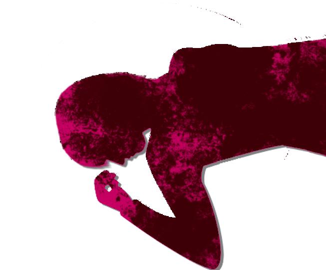
「さあなつみちゃん、死にたくないでしょ？ 生きたいでしょ？」
「――」
「もう声も出せないか。 でも、死にたくないわよね？ 生きたいって願えば生きられるわよ？」
「――」
「もう声も出せないか。 でも、死にたくないわよね？ 生きたいって願えば生きられるわよ？」
「そうそう、そうやって願えばあなたは生きた第二世代として存在できるのよ」
「ふう……」
「気分はどう？」
「おかげさまで最高だよ」
「うんうん、じゃあ手始めに。何をするかは分かるわよね？」
「ふう……」
「気分はどう？」
「おかげさまで最高だよ」
「うんうん、じゃあ手始めに。何をするかは分かるわよね？」
こうして集落にいた住人たちは神使たちによって殲滅させられた。
「じゃあ次は、逃げたみんなとそれを追いかけた住人ね。
なつみちゃんは春花を追いかけて」
「春花か……。どこにいるかなあ……」
「まあ春花に関しては、地道に探すしかないわね」
サクラさんはどのような行動をとったかは不明だが、古郡先輩はこうして新村先輩を探して――。
「春花か……。どこにいるかなあ……」
「まあ春花に関しては、地道に探すしかないわね」
サクラさんはどのような行動をとったかは不明だが、古郡先輩はこうして新村先輩を探して――。
そして今に至る。
しかしこの糸って子も古郡先輩が死んだと思い込んでいるようだ。
どうもつじつまが合わない。
しかしこの糸って子も古郡先輩が死んだと思い込んでいるようだ。
どうもつじつまが合わない。
「ねえ糸ちゃん、ちょっといい？」
「はい」
「糸ちゃんはさっきまで古郡先輩と感覚がつながっていたんだよね？」
「ええ……」
「それは具体的にいつまで？」
「はい」
「糸ちゃんはさっきまで古郡先輩と感覚がつながっていたんだよね？」
「ええ……」
「それは具体的にいつまで？」
「住人たちがなつみさんを攻撃したときです。
もう、私は見ていられなくて、その時に……」
「じゃあ古郡先輩が本当に死んだかどうかまでは、確認したわけじゃないんだよね？」
「え？ まあ、確かに……。 まさか……！」
「古郡先輩は死ぬギリギリで神使によって助けられたと思うの」
「なるほど……」
「じゃあ古郡先輩が本当に死んだかどうかまでは、確認したわけじゃないんだよね？」
「え？ まあ、確かに……。 まさか……！」
「古郡先輩は死ぬギリギリで神使によって助けられたと思うの」
「なるほど……」
「古郡先輩は神使になったといっても、死んだわけじゃないんだよね？
その場合、古郡先輩を助ける――元に戻す方法はないの？」
「助ける方法……」
「うん、何かないかな……」
「助ける方法……」
「うん、何かないかな……」
糸ちゃんは顎に手を当て、考え込む。
この様子では、すぐにこれといった方法はないようにも思えるが……。
この様子では、すぐにこれといった方法はないようにも思えるが……。
「ないことはありません。
ただ、あまりにも現実的でないのですが……」
「言って！ 何でもいいから」
「死月妖花の核となる者に頼むのです」
「核？」
「ええ」
「言って！ 何でもいいから」
「死月妖花の核となる者に頼むのです」
「核？」
「ええ」
「でもその核って……糸ちゃんじゃないの？」
「私も確かに核でした。 しかしご覧の通り、私は死月妖花と決別しました。今はある人物に核になっています」
「ある人物……」
「私も確かに核でした。 しかしご覧の通り、私は死月妖花と決別しました。今はある人物に核になっています」
「ある人物……」
「死月妖花とは菌類であり、もともと知性を持つ者ではありません。
私は最初に死月妖花に取り込まれ、人間の知性を与えました。
それから次々と無数の人々を取り込んでいったので、必ずしも今は私が核である必要はありません。
死月妖花と核の違いが一致すればいいのです」
「誰なの！？ 今の核って！」
「ごめんなさい、それは私にも知らされてなくて」
「ごめんなさい、それは私にも知らされてなくて」
そうか、糸ちゃんがだんだん殺人を拒むようになっていたのなら、そのような情報を与えようとはしないだろう。
でも逆に言えば、今の核は殺人を厭わない外道な人間と言うことになる。
一体誰なのか……。
でも逆に言えば、今の核は殺人を厭わない外道な人間と言うことになる。
一体誰なのか……。
「ねえ、核になった人が死月妖花の取り込まれたのはいつか分かる？」
「はい、それは存じております。 はっきりとは覚えていませんが、20年ほど前だったような……」
「20年前に死月妖花に取り込まれた人物が核。 城崎さん、その頃に死んだ人はいませんか？ 殺人を拒まないようなちょっとやばめの人って」
「はい、それは存じております。 はっきりとは覚えていませんが、20年ほど前だったような……」
「20年前に死月妖花に取り込まれた人物が核。 城崎さん、その頃に死んだ人はいませんか？ 殺人を拒まないようなちょっとやばめの人って」
「いや、そんなやつはいないはずだ。好んで殺人をするようなやつなんて……」
「ですよね……」
「その核となる者、西洋の言葉で『アバドン』と言われています」
「アバドン……？ 確か奈落の王って意味だよね」
「ですよね……」
「その核となる者、西洋の言葉で『アバドン』と言われています」
「アバドン……？ 確か奈落の王って意味だよね」
「じゃあその……なんつーんだ、現役のアバドンって言えばいいのか？
そいつに頼んでなつみを解放してもらうと……」
「方法はそれしかありません。 でも、どうやって説得すればいいか……」
「方法はそれしかありません。 でも、どうやって説得すればいいか……」
「話は分かった。
とにかくすぐにそいつに会わせてほしい。妻と娘の命がかかっているんだ」
「おじさん、気持ちは分かりますが焦ってはダメです。 糸ちゃんの話なら2人が殺されることはないはずです。もっとしっかりと情報を集めないと……」
「おじさん、気持ちは分かりますが焦ってはダメです。 糸ちゃんの話なら2人が殺されることはないはずです。もっとしっかりと情報を集めないと……」
「んん……。情報を集めると言ってもそれしか方法がないなら……」
「よく分からないけど、今の俺たちはどうなんだ？ もしサクラちゃんや栄一郎君に出会ってしまったら危険じゃないのか？」
「よく分からないけど、今の俺たちはどうなんだ？ もしサクラちゃんや栄一郎君に出会ってしまったら危険じゃないのか？」
「確かに、あの2人が最も脅威です。今も私たちを探しているはずです。
なつみさんが私たちの居場所を知っている以上、ここへ来るのも時間の問題です」
「だったら早くその核になってるやつに会わせてくれよ！ どこへ行ったらいい！？」
「だったら早くその核になってるやつに会わせてくれよ！ どこへ行ったらいい！？」
「おそらく、私がこの場で呼びかければ応じるものと……」
「え？ いきなりここに現れるってことか……？」
「はい、この荒田一帯が彼女の支配域ですから」
「すぐに呼んでくれ！ 俺の家族に関わることなんだ！」
「え？ いきなりここに現れるってことか……？」
「はい、この荒田一帯が彼女の支配域ですから」
「すぐに呼んでくれ！ 俺の家族に関わることなんだ！」
「分かりました。
皆さん、覚悟はよろしいですか？ 全ての元凶をここに呼ぶことになるのです。
もし交渉が決裂すれば、私たちは全員…………」
「時間がない、急いでくれ。このままではどのみち俺たちも危ないんだ」
正直、まだ覚悟はできていない。
と言うよりも、今から核が現れると言われても実感がない。
「時間がない、急いでくれ。このままではどのみち俺たちも危ないんだ」
正直、まだ覚悟はできていない。
と言うよりも、今から核が現れると言われても実感がない。
他のみんなも同じなのか、同意まではしないものの、誰も反対しようとしない。
と、糸ちゃんはすーっと息を吸った。
と、糸ちゃんはすーっと息を吸った。
「聞こえますか？ あなたの存在はすでに知られています。
このままではあなたの存在は公になるでしょう。
もし異存がなければ、ここで話をしましょう」
糸ちゃんは叫ぶとまではいかなくとも、宙に向かって声を張る。
糸ちゃんは叫ぶとまではいかなくとも、宙に向かって声を張る。
と――。
突然その場に風が吹き荒れた。
同時に鼓膜を破かんばかりの轟音が鳴り響く。
突然その場に風が吹き荒れた。
同時に鼓膜を破かんばかりの轟音が鳴り響く。
「何だよこれ……！」
「ぐ……！ これで……核が現れるのか！？」
私たちは耳をふさいでその場にうずくまった。
「ぐ……！ これで……核が現れるのか！？」
私たちは耳をふさいでその場にうずくまった。
――音が鳴りやんでからどれくらい経っただろうか。
いや、音が鳴りやんでも私たちは 慄 き、なかなかはっきりと事態を把握できない。
唯一、糸ちゃんだけは辺りを見回していた。
しかし糸ちゃんの表情を見るに、彼女もまた事態を理解できていないような――。
いや、音が鳴りやんでも私たちは 慄 き、なかなかはっきりと事態を把握できない。
唯一、糸ちゃんだけは辺りを見回していた。
しかし糸ちゃんの表情を見るに、彼女もまた事態を理解できていないような――。
「糸、うまくいったのか？」
「いえ……」
「ダメってことか……？ 交渉に応じる気がないとか……？」
「そんな感じではないんです。 まるで私の声が聞こえていないような……」
「いえ……」
「ダメってことか……？ 交渉に応じる気がないとか……？」
「そんな感じではないんです。 まるで私の声が聞こえていないような……」
「はっはっは！ ようやく気づいたか！」
不意に聞こえた男の声。
不意に聞こえた男の声。

「お父さんに、サクラさん……？」
「なかなか面白そうなことをしてるじゃないか。ここで見学させてもらおうかな」
「ふふふ、お久しぶり、元女神様」
死んだ第一世代と、第二世代……。
「なかなか面白そうなことをしてるじゃないか。ここで見学させてもらおうかな」
「ふふふ、お久しぶり、元女神様」
死んだ第一世代と、第二世代……。
「糸姫、お前は僕たちを裏切ったんだ。
お前はもはやただの人。
女神様に声が聞こえるはずがないだろう？」
「まあでもこうやって神使である私たちが来たんだから、けっこうサービスした方よ？」
「まあでもこうやって神使である私たちが来たんだから、けっこうサービスした方よ？」
「あはは、いよいよ女神様の願いが叶うのかしら？」
さらに現れたのは、ぐったりとしたおばさんを抱えた古郡先輩。
さらに現れたのは、ぐったりとしたおばさんを抱えた古郡先輩。
「なつみ！」
「お父さん、ごめんね。私、こうやって生まれ変わったから」
「何を言っているんだ！ 目を覚ませ！」
「…………」
「なあなつみ……！」
「お父さん、ごめんね。私、こうやって生まれ変わったから」
「何を言っているんだ！ 目を覚ませ！」
「…………」
「なあなつみ……！」

「ねえ、お父さん……」
「何だ？」
「お母さんが持っていたこれ。 これを使えば、お父さんも私たちと永遠に一緒になれるよ」
「く……！」
「何だ？」
「お母さんが持っていたこれ。 これを使えば、お父さんも私たちと永遠に一緒になれるよ」
「く……！」
「おいおいなつみちゃん、それじゃあ良治がびっくりするだけだろ？ こいつ、慎重派だから」
「まあまあ栄一郎。なつみちゃんは新米神使なんだから」
「あーあ、残念……。 じゃあ私は邪魔しないように、みんなが逃げないようにちゃんと見てるね」
「まあまあ栄一郎。なつみちゃんは新米神使なんだから」
「あーあ、残念……。 じゃあ私は邪魔しないように、みんなが逃げないようにちゃんと見てるね」
古郡先輩は軽々とおばさんを抱えている。
だからいつもの先輩の身体能力ではないことを意味している。
それはおそらく、あの住人たちを一方的に葬り去るほど。
これはつまり、もはや逃げることすら叶わないってことだ。
だからいつもの先輩の身体能力ではないことを意味している。
それはおそらく、あの住人たちを一方的に葬り去るほど。
これはつまり、もはや逃げることすら叶わないってことだ。
「まあ、一応言っておくけど、母さんと兄貴は集落にいる。
これからの生き証人として、無傷のまま捕縛してある」
「他にも生き残った住人がいるみたいだけど、こっちの方が楽しそうだしね。 茅萱も夏菜も幸い死んだことだし」
「他にも生き残った住人がいるみたいだけど、こっちの方が楽しそうだしね。 茅萱も夏菜も幸い死んだことだし」
「2人が死んだことが幸い……？」
「あの2人には女神様の脅威となる血が流れている。 だからあの2人が死んだのは好都合だった。 いまやもう、女神様の脅威はない。生きている君たちを除いてはね」
「後は女神様がどう判断なさるか。 あなたたちの交渉に応じるのか、それとも…… ふふふ」
「あの2人には女神様の脅威となる血が流れている。 だからあの2人が死んだのは好都合だった。 いまやもう、女神様の脅威はない。生きている君たちを除いてはね」
「後は女神様がどう判断なさるか。 あなたたちの交渉に応じるのか、それとも…… ふふふ」
「ようし、じゃあさっそくはじめようか」
「糸姫、栄一郎が言ったけどあなたはもうただの人間。 それに女神様に嫌われているから、あなたの呼び掛けには応じないでしょうね」
「そ こ で！ 大サービスだ。僕たちが代わりに女神様にお願いしよう」
「糸姫、栄一郎が言ったけどあなたはもうただの人間。 それに女神様に嫌われているから、あなたの呼び掛けには応じないでしょうね」
「そ こ で！ 大サービスだ。僕たちが代わりに女神様にお願いしよう」
「女神様！ ついにこの時が来ました！
ついに女神様がこの世に生を受け、完全な存在として誕生する日が来ました！
どうぞ、お出ましください！」
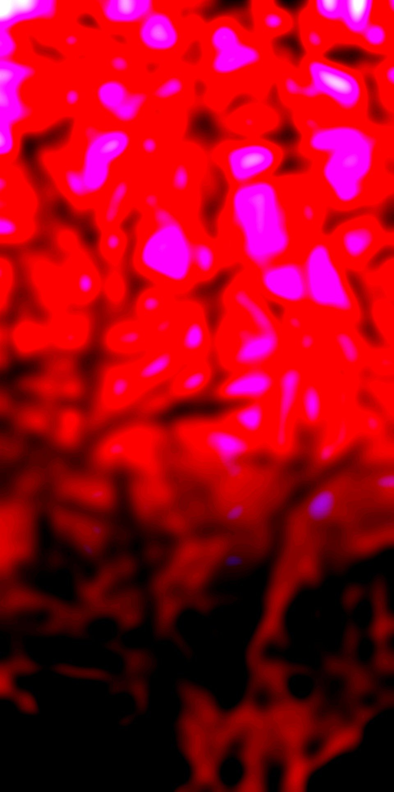
「ここは……どこだ……？」
妙に暖かい。
先ほどまでは荒田の山道にいたはず。
だから四月の夜、少し冷える風が吹いていた。
妙に暖かい。
先ほどまでは荒田の山道にいたはず。
だから四月の夜、少し冷える風が吹いていた。
しかしここはどうだ。とても暖かく風もない。
それでいて、どこかジメジメした空気。
それでいて、どこかジメジメした空気。
先ほどまで輝いていた月も消えている。
なぜならば、上には天井があるからだ。
岩なのか木なのかよく分からないが、天井で何かが脈動するかのようにうごめいている。
なぜならば、上には天井があるからだ。
岩なのか木なのかよく分からないが、天井で何かが脈動するかのようにうごめいている。
いや、天井だけではない。
壁も床も、細長い木の根のようなものが張り巡らされており、それらが虫のようにうごめいている。
私はゆっくりと立ち上がった。
壁も床も、細長い木の根のようなものが張り巡らされており、それらが虫のようにうごめいている。
私はゆっくりと立ち上がった。
変だな。
さっきまであれだけ山を走り回っていたのに、その疲れがほとんどない。
それに頭の中もすっきりとしている。
呼吸するほどにすがすがしい気持ちになり、身体の疲れがさらに薄くなっていく。
さっきまであれだけ山を走り回っていたのに、その疲れがほとんどない。
それに頭の中もすっきりとしている。
呼吸するほどにすがすがしい気持ちになり、身体の疲れがさらに薄くなっていく。
あれ？ みんなはどこだ？
この学校の教室ほどの空間には、私以外の姿がない。
もしかして私、死んだのか？
ここはあの世ってやつか？
だからこんなに身体中がすっきりとしているのか？
この学校の教室ほどの空間には、私以外の姿がない。
もしかして私、死んだのか？
ここはあの世ってやつか？
だからこんなに身体中がすっきりとしているのか？
胸に手を当ててみる。
心臓はいつも通り、血液を身体中に送っているようだ。
呼吸を止めてみる。
すると息苦しさを覚え、すぐに新しい空気を求めて肺が動く。
どうやらまだ生きているようだ。
心臓はいつも通り、血液を身体中に送っているようだ。
呼吸を止めてみる。
すると息苦しさを覚え、すぐに新しい空気を求めて肺が動く。
どうやらまだ生きているようだ。
「春花、目を覚ましたんだね」
これは幸太郎さんの声……？
いや、幸太郎さんは春花『ちゃん』と呼ぶ。
だからこれは……お父さんか。
これは幸太郎さんの声……？
いや、幸太郎さんは春花『ちゃん』と呼ぶ。
だからこれは……お父さんか。
「お父さん、ここはどこだ？」
上を見回しながら、どこともなしに声をかける。
「無駄だよ、見回しても誰もいない。僕の声が聞こえるだけさ」
「ここはどこかって聞いてんだよ！」
「はは、父親に向かってひどい口の聞き方だねえ。 美冬ちゃんはどんな教育をしていたのか」
上を見回しながら、どこともなしに声をかける。
「無駄だよ、見回しても誰もいない。僕の声が聞こえるだけさ」
「ここはどこかって聞いてんだよ！」
「はは、父親に向かってひどい口の聞き方だねえ。 美冬ちゃんはどんな教育をしていたのか」
「何が父親だ！ 本物のお父さんがこんなことするわけないだろ！」
「まあ、確かに意識は生前の僕とは違う。 ああそうそう、ここがどこかだったね。 ここは糸姫山の頂上の地下だ」
「糸姫山の頂上……？」
「まあ、確かに意識は生前の僕とは違う。 ああそうそう、ここがどこかだったね。 ここは糸姫山の頂上の地下だ」
「糸姫山の頂上……？」
「女神様は今、休息を取られている。
住人たちが急に暴走したもんだから、急いで僕らを使役する必要があってね。
さらになつみちゃんを死なないように処置したもんだから、女神様はたいそうお疲れだ」
「そんなこともあって、糸姫に隙を見せてしまい逃げられてしまったわけだけど、まあ、大した問題じゃない。
だから女神様をお呼びするよりも、君らをここへ連れてきた方がいいと思ったわけさ」
「君らって……他のみんなもいるのか？」
「もちろんだ。他のみんなはこっちで預かっている。 ああ、無事だから心配しなくていいよ」
「もちろんだ。他のみんなはこっちで預かっている。 ああ、無事だから心配しなくていいよ」
「何で私だけなんだよ……私だけどうして独りで」
「女神様はきっと、春花と2人で話したいとお思いだろうからさ」
「どこなんだよ、その女神様って……」
「ほら、よく見てみなよ。 さっきから君の前にいらっしゃるだろ？」
「え？」
「女神様はきっと、春花と2人で話したいとお思いだろうからさ」
「どこなんだよ、その女神様って……」
「ほら、よく見てみなよ。 さっきから君の前にいらっしゃるだろ？」
「え？」
上を見続けていた目を水平に戻し、周囲を見回す。
と、隅の方で、黒い塊が置かれている。
あれは明らかに木の根とは違う。
まるで髪の毛の塊のように、黒く細く、そして長い繊維が一抱えほどある何かに絡みついている。
と、隅の方で、黒い塊が置かれている。
あれは明らかに木の根とは違う。
まるで髪の毛の塊のように、黒く細く、そして長い繊維が一抱えほどある何かに絡みついている。
まさかあれが女神様――核とかアバドンって言われるやつなのか？
近づいて大丈夫なのだろうか。
取って食われやしないだろうか。
そもそも、あれが生き物なのだろうか。
近づいて大丈夫なのだろうか。
取って食われやしないだろうか。
そもそも、あれが生き物なのだろうか。
「…………」
私は黒い塊に歩を進めていく。
お父さんは言っていた――私と話がしたいのだと。
だからいきなり暴力的手段に出たりはしないだろう。
私は黒い塊に歩を進めていく。
お父さんは言っていた――私と話がしたいのだと。
だからいきなり暴力的手段に出たりはしないだろう。
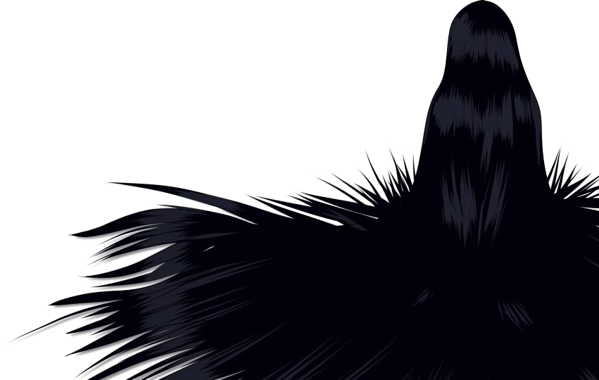
「うわあ……」
思わず低い悲鳴が漏れる。
黒い髪のような塊と思っていたもの、それはまぎれもなく髪の毛だった。
一体何年放置したらこんなにも長い髪になるのだろうか。
髪は何かを覆い、そして周囲にも伸び張っている。
思わず低い悲鳴が漏れる。
黒い髪のような塊と思っていたもの、それはまぎれもなく髪の毛だった。
一体何年放置したらこんなにも長い髪になるのだろうか。
髪は何かを覆い、そして周囲にも伸び張っている。
「お前が……
核、なのか……？」
「 」
「お前、人だろ……？」
「 」
「お前……誰なんだ……？」
「 」
「お前、人だろ……？」
「 」
「お前……誰なんだ……？」
私がそこまで言うと、かすかに塊が動く。
それに反応するかのように、私も足も1歩下がる。
そして塊を覆いていた髪の一部が、はらりと落ちる。
それに反応するかのように、私も足も1歩下がる。
そして塊を覆いていた髪の一部が、はらりと落ちる。
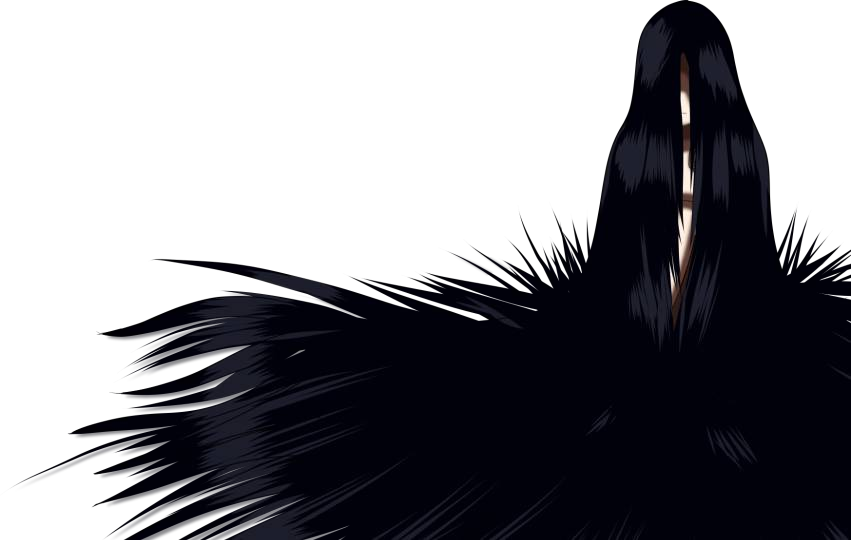
その隙間から白いものが覗く。
それが肌だと気づくまでに、3度のまばたきを要した。
それが肌だと気づくまでに、3度のまばたきを要した。
「やっぱり、お前が……」
「 」
「言葉が通じるか分からないけど、頼みを聞いてくれ。 なつみを元に戻してほしい」
「 」
「なつみを元の人間に戻してほしい」
「 」
「 」
「言葉が通じるか分からないけど、頼みを聞いてくれ。 なつみを元に戻してほしい」
「 」
「なつみを元の人間に戻してほしい」
「 」
「なつみを……」
「 」
「なあ……」
「 」
塊は相変わらずむっつりと沈黙を貫く。
「 」
「なあ……」
「 」
塊は相変わらずむっつりと沈黙を貫く。
あるいは言葉が分からないのか、私には聞こえないほどの小声なのか。
どちらにしても、私との意思疎通は無理のようだ。
どちらにしても、私との意思疎通は無理のようだ。
「悪い、人違いだったみたいだ」
「――わり」
「え？」
声が聞こえた気がする。
黒い塊から、かすかに声が……。
「――わり」
「え？」
声が聞こえた気がする。
黒い塊から、かすかに声が……。
「何か、言ったのか……？」
私は幼児に話しかけるように、できるだけ穏やかな声にしたつもりだ。
「もう1回、言ってくれるか？」
「代わり…… 欲しい……」
「代わり……？」
「あの子の……代わり……」
私は幼児に話しかけるように、できるだけ穏やかな声にしたつもりだ。
「もう1回、言ってくれるか？」
「代わり…… 欲しい……」
「代わり……？」
「あの子の……代わり……」
あの子と言うのはなつみのことだろうか。
今の感じだと、なつみを解放する代わりに他の人間に神使になれってことだろう。
しかし当然ながら、そんなことできるはずない。
今の感じだと、なつみを解放する代わりに他の人間に神使になれってことだろう。
しかし当然ながら、そんなことできるはずない。
少しだけの会話ではあるが、この塊の中にいるのは、幼い子供の様にも思える。
声色とかではなく、話し方のぎこちなさが、妙に子供っぽかったのだ。
もし20年前に死んだ子供がそのままこのように現れたのなら、理屈よりも感情で訴えるべきか？
私はその子の前にしゃがんだ。
やはり、いきなり襲い掛かってくるような感じでもない。
声色とかではなく、話し方のぎこちなさが、妙に子供っぽかったのだ。
もし20年前に死んだ子供がそのままこのように現れたのなら、理屈よりも感情で訴えるべきか？
私はその子の前にしゃがんだ。
やはり、いきなり襲い掛かってくるような感じでもない。
「なあ、なつみは私たちにとって大切な人なんだ」
「…………」
「だからさ、返してほしいんだ。 人の物を盗ったらダメだって、お母さんとかお父さんに言われたことないか？」
「お母さん……？」
「うん」
「…………」
「だからさ、返してほしいんだ。 人の物を盗ったらダメだって、お母さんとかお父さんに言われたことないか？」
「お母さん……？」
「うん」
「ママ……」
「ん？」
「ママに会いたい……」
「ママにか……」
「ママに会いたいよお……」
「ん？」
「ママに会いたい……」
「ママにか……」
「ママに会いたいよお……」
この子は思っていた以上に幼いようだ。
子供は嫌いではないが、こうも理屈が通用しない相手ではどう話したらいいか分からない。
何年も前に夏菜が言っていた。
どうしてうちにはママがいないのって。
子供は嫌いではないが、こうも理屈が通用しない相手ではどう話したらいいか分からない。
何年も前に夏菜が言っていた。
どうしてうちにはママがいないのって。

まだ4、5歳だった夏菜は、会う人会う人にそのような質問をしていたようだ。
ある人は言った―― お空から見守っているんだよって。
ある人は言った―― いつも夏菜ちゃんの心にいるよって。
私は言った―― 死んじゃったからだよって。
ある人は言った―― お空から見守っているんだよって。
ある人は言った―― いつも夏菜ちゃんの心にいるよって。
私は言った―― 死んじゃったからだよって。
当時の私には、大人ほど気の利いた返事ができなかった。
今思えば、とても冷酷な答えだったと思う。
すると夏菜は言った。
「絵本で見た。生き物はみんな死ぬって。 でも死んだから魂が生まれ変わって、新しい命になるって」と。
夏菜の年にしてはあまりにも難しい概念だった。
今思えば、とても冷酷な答えだったと思う。
すると夏菜は言った。
「絵本で見た。生き物はみんな死ぬって。 でも死んだから魂が生まれ変わって、新しい命になるって」と。
夏菜の年にしてはあまりにも難しい概念だった。
でも夏菜は知っていた。
荒田の人々は山の獣を狩り、殺し、そして食う。
食った獣の遺骨は墓に埋める。
そして供養し、来世での幸福を願うのだ。
夏菜にとってそのような死生観は、世間の人々以上に身近だったのだ。
荒田の人々は山の獣を狩り、殺し、そして食う。
食った獣の遺骨は墓に埋める。
そして供養し、来世での幸福を願うのだ。
夏菜にとってそのような死生観は、世間の人々以上に身近だったのだ。
また夏菜は言った。
「ママ、きっと別のところで幸せになってるよね」と。
あまりにも私とはかけ離れた死生観に、何も答えることができなかった。
幼い夏菜の言葉は、今でも鮮明に思い出される。
「ママ、きっと別のところで幸せになってるよね」と。
あまりにも私とはかけ離れた死生観に、何も答えることができなかった。
幼い夏菜の言葉は、今でも鮮明に思い出される。
「なあ、私はお前のママは分からないけど……。
きっとママもお前に会いたがっているよ。
そしていつもいつもお前のことを思っているはず」
「…………」
どうもうまく話せた気がしない。
ああいうのは夏菜が言うからこそ説得力があるのだ。
私のような現代社会に溶け込んだ者の言葉など、たとえ子供でも空虚に聞こえるだろう。
「…………」
どうもうまく話せた気がしない。
ああいうのは夏菜が言うからこそ説得力があるのだ。
私のような現代社会に溶け込んだ者の言葉など、たとえ子供でも空虚に聞こえるだろう。
「私……パパとママと一緒がいい……」
「パパ……？ パパはいるのか？」
「うん……」
父親がいるということは、こいつと同じくすでに故人なのだろう。
「パパ……？ パパはいるのか？」
「うん……」
父親がいるということは、こいつと同じくすでに故人なのだろう。
「じゃあパパは死んだ人なのか？」
「うん……」
「お前の…… 君の名前は……？」
「分からない……」
「そうか……。 パパの名前は？」
「教えてくれないの」
「うん……」
「お前の…… 君の名前は……？」
「分からない……」
「そうか……。 パパの名前は？」
「教えてくれないの」
「じゃあママの名前は？」
「…………」
と、さわさわと首を横に振る。
すると頭の髪の毛がさっと落ち、さらにその身体が見えてくる。
「…………」
と、さわさわと首を横に振る。
すると頭の髪の毛がさっと落ち、さらにその身体が見えてくる。
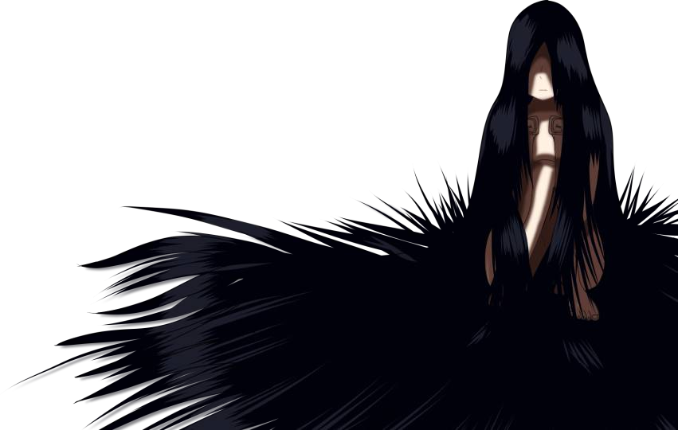
服は着ていないが、女性に間違いない。
そして思っていた以上に大人の姿だった。
多分、私とそう変わらないくらいだろう。
それなのに幼児のように指をしゃぶり、胎児の様に脚を抱える。
まるでずっとここに監禁され、何の教育も受けずに育ったかのように。
そして思っていた以上に大人の姿だった。
多分、私とそう変わらないくらいだろう。
それなのに幼児のように指をしゃぶり、胎児の様に脚を抱える。
まるでずっとここに監禁され、何の教育も受けずに育ったかのように。
「そっか……会いたい人の名前が分からないってつらいよな……」
私はこの時、この子に親近感がわいたのだ。
私も父親を亡くした身であり、この子の気持ちが少し分かるのだ。
それに当時のお母さんは心神喪失状態で、私には思いきり甘えられる親がいなかった。
当時の自分と少し重ね合わせてしまったのだ。
私はこの時、この子に親近感がわいたのだ。
私も父親を亡くした身であり、この子の気持ちが少し分かるのだ。
それに当時のお母さんは心神喪失状態で、私には思いきり甘えられる親がいなかった。
当時の自分と少し重ね合わせてしまったのだ。
だから、うまく話せば何の犠牲も出さずに、なつみを返してもらえるかもしれない。
もっとよく話を聞き、この子が本当に望むものを探し出す。
女ケ沢でなつみがしてくれたように。
もっとよく話を聞き、この子が本当に望むものを探し出す。
女ケ沢でなつみがしてくれたように。
「なあ、お前のママがここにいないってことは、ママはまだ生きているのか？」
「…………」
さらりとうなずく。
「…………」
さらりとうなずく。
「もしママに会えたら……
会えたら、なつみを返してくれるか？」
「…………」
「さすがにママを死なすわけにはいかないけど、もし時々でもお前に会いに来てくれるなら…… どうだ？」
「…………」
2度尋ねるが、今度は何も動きを見せない。
「…………」
「さすがにママを死なすわけにはいかないけど、もし時々でもお前に会いに来てくれるなら…… どうだ？」
「…………」
2度尋ねるが、今度は何も動きを見せない。
「もしなつみを返してくれるなら、私、ママを探す手伝いをする」
と、その子の身体がピクリと動く。
「どうだ？」
「本当にママを探してくれるの？」
「ああ、約束する。 なつみを返してもらえるなら、それくらいどうってことない」
と、その子の身体がピクリと動く。
「どうだ？」
「本当にママを探してくれるの？」
「ああ、約束する。 なつみを返してもらえるなら、それくらいどうってことない」
「分かった……。
じゃああの子、返すね」
「ありがとう」
「ありがとう」
「あらあら、交渉成立ね」
今度はサクラさんの声が響き渡る。
「じゃあ約束通りなつみちゃんは返すわ」
今度はサクラさんの声が響き渡る。
「じゃあ約束通りなつみちゃんは返すわ」
と、壁の一部が急激に脈動を始め、やがて人の背丈ほどもある腫れ物のように膨張していく。
そしてその腫れ物に亀裂が入り――。
そしてその腫れ物に亀裂が入り――。
中からずるりと、透明な粘液と共に白い人影が倒れ込んできた。
「なつみ！ おい！ なつみ！」
声をかけても返事どころか、微動だにしない。
かすかに胸が動いており、呼吸はしているらしい。
私は服を脱ぎ、なつみにかけてやった。
声をかけても返事どころか、微動だにしない。
かすかに胸が動いており、呼吸はしているらしい。
私は服を脱ぎ、なつみにかけてやった。
「ねえ」
声の方を振り返ると――。
声の方を振り返ると――。
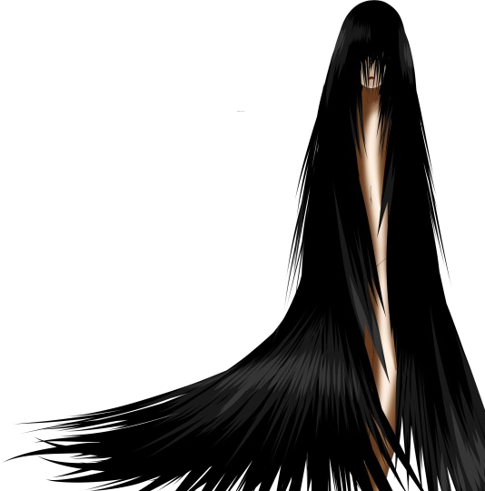
胎児のように身を縮こめていた塊が、すっと立ち上がっていた。
それでも長い髪は地面に着き、ここいら中にある木の根のように這っている。
それでも長い髪は地面に着き、ここいら中にある木の根のように這っている。
「ありがとう」
そいつは不意に礼を言ってきた。
「な、なんだよ……。私、まだ何もしてないぞ……」
「ママに会わせてくれるって約束してくれたから」
「…………」
そいつは不意に礼を言ってきた。
「な、なんだよ……。私、まだ何もしてないぞ……」
「ママに会わせてくれるって約束してくれたから」
「…………」
約束しただけで礼を言うなんて、こいつは人を疑うことを知らないのか？
いや、もちろん私はこいつの善意に報いるために母親を探すつもりだ。
いや、もちろん私はこいつの善意に報いるために母親を探すつもりだ。
「私……とても嬉しい」
「え？」
「ママを…… 取り返せるから」
何を言っているんだ？
嬉しい？ 取り返す？
どうも私が思っていた以上に深い事情があるみたいだ。
「え？」
「ママを…… 取り返せるから」
何を言っているんだ？
嬉しい？ 取り返す？
どうも私が思っていた以上に深い事情があるみたいだ。
と、そいつはなつみが出てきた亀裂をすっと指さす。
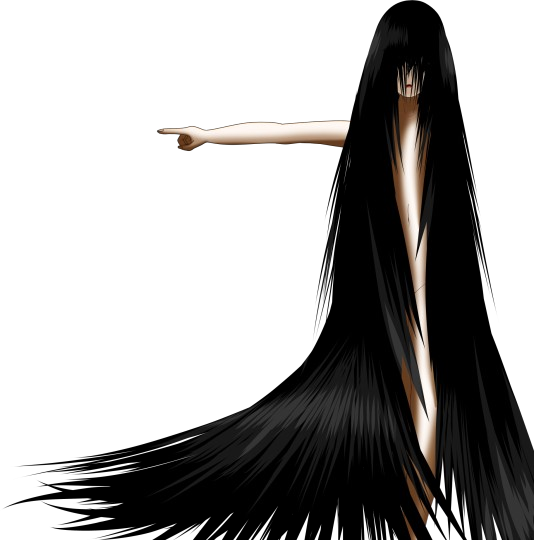
「その穴から外に出られる」
「そ、そうか……。私、もう帰ってもいいのか？」
そいつはさらりとうなずく。
「そ、そうか……。私、もう帰ってもいいのか？」
そいつはさらりとうなずく。
この不気味で不可解な場所、そしてやり取りではあるが、思っていた以上に簡単に交渉が済んでしまった。
それとも、外でお父さんが待ち構えていて、不意打ちしたりなんてことは……。
それとも、外でお父さんが待ち構えていて、不意打ちしたりなんてことは……。
「はっはっは！ すごいよ春花！ 完全に君の勝ちだよ！」
「心配しないで。ここにいる全員を無傷で返してあげる。 ただし、今だけ」
「今だけ……？」
「心配しないで。ここにいる全員を無傷で返してあげる。 ただし、今だけ」
「今だけ……？」
「そうだね、あと15年ほどすれば女神様は元木町へ移住なさる。
そうなったら元木町は人の住めないゴーストタウンになるだろう」
「言ってる意味が分かんねえよ……」
「言ってる意味が分かんねえよ……」
「まあ、今は分からなくてもいいわ。
15年後の四月頃に元木町は滅びる。
死にたくなかったらそれまでに元木町から離れることね」
「さあ、もうここに用はないだろう？ さっきも言ったけど女神様はお疲れなんだ。なつみちゃんを連れて出ていってくれ」
「さあ、もうここに用はないだろう？ さっきも言ったけど女神様はお疲れなんだ。なつみちゃんを連れて出ていってくれ」
「あ、そうそう、大事なことを言い忘れていたわ。
もしここでの出来事や15年後のことを誰かに口外したら……
その時は全員の命はないと思ってね」
「つまり、僕たちのことを放っておいてくれたらいいのさ」
「つまり、僕たちのことを放っておいてくれたらいいのさ」
2人とも次々と勝手なことばかり言いやがる。
ここでのことを黙っていろと言うのはまだ分かるけど、15年後って何のことだ？
それまでに元木町を離れろ？
ここでのことを黙っていろと言うのはまだ分かるけど、15年後って何のことだ？
それまでに元木町を離れろ？
私でも分かる。こいつらは何かをたくらんでいる。
口封じをしたいならこの場で全員を殺した方が確実。
例えここでのことを漏らしたら殺すとしても、今、敢えて無傷で解放するなんて……。
口封じをしたいならこの場で全員を殺した方が確実。
例えここでのことを漏らしたら殺すとしても、今、敢えて無傷で解放するなんて……。
私はなつみに服を着せて立ち上がった。
やっぱりここでは妙に身体が軽い。
なつみを担ぐのはそれでも一苦労ではあったが、何とかなりそうだ。
私はよろよろと亀裂の方へ向かった。
やっぱりここでは妙に身体が軽い。
なつみを担ぐのはそれでも一苦労ではあったが、何とかなりそうだ。
私はよろよろと亀裂の方へ向かった。
「なあ、一応礼は言うよ。なつみを助けてくれてありがとう。
お前が何もしなかったら、なつみは住人たちに殺されていたんだもんな」
「ねえ……」
「ん？」
「あなたの名前…… 春花って言うの？」
「ねえ……」
「ん？」
「あなたの名前…… 春花って言うの？」
「ああ、新村春花だ。
さっきから色々と話してる男の人の娘だよ」
「そう……」
「どうかしたのか？」
「何でもない」
「そうか……。 あの…… ちゃんと約束は守るから。お前のお母さんを探すって」
「そう……」
「どうかしたのか？」
「何でもない」
「そうか……。 あの…… ちゃんと約束は守るから。お前のお母さんを探すって」
「…………
いい」
「え？」
「もういい。しなくていい」
「は？」
「私からあなたへのお願いは1つだけ」
「お願い……？」
「え？」
「もういい。しなくていい」
「は？」
「私からあなたへのお願いは1つだけ」
「お願い……？」
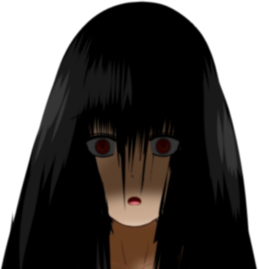
「できるだけ長生きしてね？」
私はその時、初めてそいつの顔を見たのだ。
誰かに似ている気がした。
誰かに似ている目。
そしてその目つき、子供の頃、1度だけ見た気がするのだが――。
誰かに似ている気がした。
誰かに似ている目。
そしてその目つき、子供の頃、1度だけ見た気がするのだが――。
私はなつみと共に脱出した。
外に出て初めて気づいたが、どういうわけか5日も経過していたらしい。
四月一三日の朝、私たちは保護された。
他のみんなも無事だった。
外に出て初めて気づいたが、どういうわけか5日も経過していたらしい。
四月一三日の朝、私たちは保護された。
他のみんなも無事だった。
さらに不可解だったのは、私以外、全員があの出来事の記憶を失くしていたのだ。
ばあちゃんや幸太郎さんも見つかったが、同じくあの夜の記憶を失っていた。
残されていたのは、集落に転がっていた住人たちの死体。
ばあちゃんや幸太郎さんも見つかったが、同じくあの夜の記憶を失っていた。
残されていたのは、集落に転がっていた住人たちの死体。
もしかしたら、あの出来事は夢だったのではないか。
そう思うこともあったが、ならばなぜ住人たちはみんな死んでいたのか。
あの出来事が現実でなければ説明がつかない。
そう思うこともあったが、ならばなぜ住人たちはみんな死んでいたのか。
あの出来事が現実でなければ説明がつかない。
実はもう1人、生存者がいたのだ。

住人の1人である新島香織さん。
彼女は家の奥の方で震えながら身を隠していたらしい。
肩の部分に大けがを負っていたらしく、すぐに病院に運ばれた。
私は四月の内に香織さんの見舞いに行った。
彼女は家の奥の方で震えながら身を隠していたらしい。
肩の部分に大けがを負っていたらしく、すぐに病院に運ばれた。
私は四月の内に香織さんの見舞いに行った。
だが香織さんはずっと震えていて、まともに会話することもできなかった。
発見当初からこのような感じで、何が起きたのか調べることすらできないらしい。
発見当初からこのような感じで、何が起きたのか調べることすらできないらしい。
その3ヶ月後、香織さんは過度のストレスのせいなのか、やせ細り、病院でひっそりと亡くなった。
私は香織さんの様子で確信した。
やっぱりあれは夢なんかではなかった。
私が覚えているそのままのことが起きていたはずだ。
私は香織さんの様子で確信した。
やっぱりあれは夢なんかではなかった。
私が覚えているそのままのことが起きていたはずだ。
「えー最新の情報をお伝えします。
先週発生した元木市での地震ですが、政府の発表によりますと、やはり発生した毒ガスの影響で生存者の存在は絶望視されているとのことです。
また大きな植物状のものや濃い霧の影響で元木市の詳細を知ることは難しく、派遣された特別部隊も予定を5日過ぎた今も帰還しておりません」
私はなつみや五島たちに何かと理由をつけて元木町から離れるよう促した。
おかげで、この災害に巻き込まれずに済んだ。
おかげで、この災害に巻き込まれずに済んだ。
祀耀815年、何が起きるのか知っていた。
私だけが――ただ1人知っていたのだ。
それを誰にも口外しなかった。
そのように約束したから。
私だけが――ただ1人知っていたのだ。
それを誰にも口外しなかった。
そのように約束したから。
しかしそのせいで20万人近い人々が死んだのだ。
もし私がこのことを公表していたら、これほど悲惨なことにはならなかったのではないだろうか。
私はこの1週間、その罪悪感で打ちひしがれていた。
もし私がこのことを公表していたら、これほど悲惨なことにはならなかったのではないだろうか。
私はこの1週間、その罪悪感で打ちひしがれていた。
あれから15年経ち、ようやくあいつらの言っている意味が分かったのだ。
あの女神様ってやつの目的―― それはこうやって私を苦しめること。
できるだけ長く生きて、その苦しみをずっと味わえと。
私は死ぬまでこの罪悪感につぶされて生きていくことだろう。
あの女神様ってやつの目的―― それはこうやって私を苦しめること。
できるだけ長く生きて、その苦しみをずっと味わえと。
私は死ぬまでこの罪悪感につぶされて生きていくことだろう。
あの時お父さんは「完全に君の勝ちだ」なんて言っていた。
違う。完全に私の負けだった。
なつみを助け出せたのは、確かに何物にも代えがたい成果だ。
しかしあいつらにとっては、神使となるのはなつみだろうが誰だろうが構わない。
あの薬に感染している者なら、誰だっていいのだ。
違う。完全に私の負けだった。
なつみを助け出せたのは、確かに何物にも代えがたい成果だ。
しかしあいつらにとっては、神使となるのはなつみだろうが誰だろうが構わない。
あの薬に感染している者なら、誰だっていいのだ。
そして何より、完全に私の負けだと思った理由。
それは――。
それは――。
あの時からずっと、あの人が見つかっていないのだ。